ไม่เจอค่ะ ลองคำอื่นนะคะ
คู่มือ The Last Faith แบ่งตามพื้นที่ เพราะเกมนี้เป็น metroidvania ที่เดินได้หลายลำดับ เริ่มจากแผนที่โลก กดพื้นที่ที่อยากไป แต่ละพื้นที่บอกทางเชื่อม สิ่งที่ต้องมีก่อนเข้า ของที่ต้องกลับมาเก็บทีหลัง บอส และเช็กลิสต์ ติ๊กแล้วเบราว์เซอร์จะจำไว้ให้ ฉากจบซ่อนไว้ในหัวข้อท้ายหน้าค่ะ
ความคืบหน้า
- Quest ไอเทมเควสต์: 21
- Boss บอส: 20
- Unborn Unborn of the Midnight Aristocracy: 20
- Spell เวท (Spell): 16
- Weapon อาวุธหลัก (Primary weapon): 12
- Up อัปเกรด (Holster, Belt, Blueprint): 11
- Charm Charm: 10
- Key กุญแจ (Key item): 9
- Ability ความสามารถ (Ability): 7
- Gun อาวุธรอง (Firearm): 6
- Stigma Stigma: 3
แผนที่โลก – กดเลือกพื้นที่
← เลื่อนซ้าย-ขวาเพื่อดูแผนที่ทั้งหมด · แตะพื้นที่เพื่อไปที่บทนั้น →
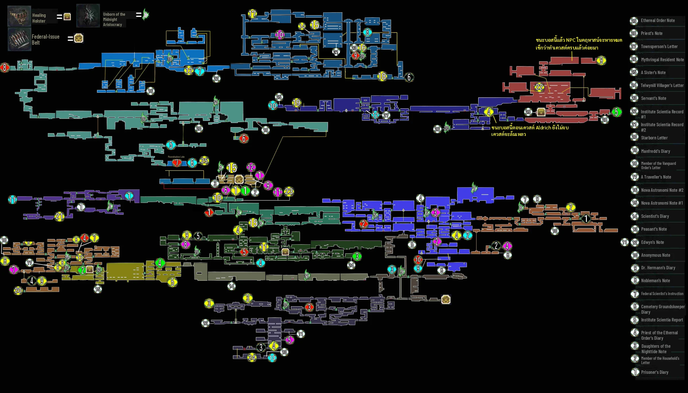
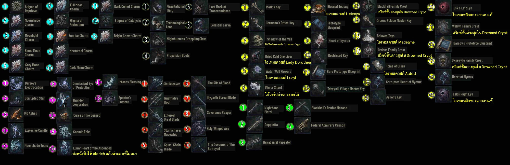
แผนที่ทั้งหมดในคู่มือนี้มาจากไกด์ Steam ของ 鬼流 ต้นฉบับเป็นภาษาจีน หนูแปลป้ายบนรูปเป็นชื่ออังกฤษในเกมแล้ว และใส่ชื่อจีนของแต่ละพื้นที่ไว้ในตารางข้างล่างให้เทียบกับต้นฉบับได้ค่ะ
วิธีอ่านไอคอน
- สีฟ้าอมเขียว: Charm และ Stigma
- ขาวดำมีเลข 1 ถึง 6: Ability (1 Gravitational Ring, 2 Technological Lens, 3 Grappling Claw, 4 Propulsion Boots, 5 Lost Mark, 6 Celestial Larva)
- ม่วงชมพู: เวท
- แดง: อาวุธหลัก
- เหลือง: กุญแจและไอเทมเควสต์
- เขียวมีเลข: ปืน
- วงกลมขาวมีเลข: โน้ต (ทั้งหมด 29 ชิ้น)
- เปลวไฟเขียว: Unborn of the Midnight Aristocracy
- ประตูสีแดง: ต้องใช้ Lost Mark of Transcendence เปิด
รายชื่อพื้นที่
| # | พื้นที่ | ชื่อบนแผนที่จีน | ต้องมีก่อนเข้า |
|---|---|---|---|
| 01 | Temple of the Deposed Gods | 廢棄神廟 | ไม่ต้องมีอะไร |
| 02 | Broken Pass | 破碎通道 | ไม่ต้องมีอะไร |
| 03 | Oxnevylle Manor | 奧辛奈維爾莊園 | ไม่ต้องมีอะไร |
| 04 | City of Mythringal | 彌斯林格城 | Mark's Key |
| 05 | Federal Inquisition | 聯邦審問所 | ทำลายโซ่ 3 จุด (ประตูใหญ่ Mythringal) |
| 06 | Site Cave | 洞穴遺跡 | Gravitational Ring |
| 07 | Drowned Crypt | 水漫墓穴 | Gravitational Ring |
| 08 | Marshland of Shadows | 陰影沼地 | Nighthunter's Grappling Claw |
| 09 | City of Erlim | 爾林城 | Nighthunter's Grappling Claw |
| 10 | Esk Mansion | 伊斯克宅邸 | Nighthunter's Grappling Claw |
| 11 | Liturgical Pass | 禮拜通道 | Propulsion Boots (air dash) |
| 12 | Damned Ruins of the Osseus Fortress | 被詛咒的骨堡廢墟 | Gravitational Ring |
| 13 | Telwynill Village | 特威尼爾村 | Propulsion Boots (air dash) |
| 14 | Ordens Regnant Palace | 奧登斯皇家宮殿 | Propulsion Boots (air dash) |
| 15 | High Walls of Mythringal | 彌斯林格高牆 | Celestial Larva (double jump) |
| 16 | Junas Ministry | 約娜絲部院 | Celestial Larva (double jump) |
| 17 | Wonder of Illygarth | 伊利加斯奇觀 | ชนะ Lord Patryk Laddak |
ไปยังพื้นที่: Temple of the Deposed Gods · Broken Pass · Oxnevylle Manor · City of Mythringal · Federal Inquisition · Site Cave · Drowned Crypt · Marshland of Shadows · City of Erlim · Esk Mansion · Liturgical Pass · Damned Ruins of the Osseus Fortress · Telwynill Village · Ordens Regnant Palace · High Walls of Mythringal · Junas Ministry · Wonder of Illygarth · DLC Dungeon
เริ่มต้น – ระบบ ค่าสถานะ และคลาส
ระบบที่ต้องรู้
- Nycrux คือเงินและค่าประสบการณ์ ได้จากการฆ่าศัตรู ตายแล้ว Nycrux หล่นไว้ตรงที่ตาย กลับไปเก็บได้
- อัปเลเวลได้ที่ Helenya หน้า Oxnevylle Manor เท่านั้น เลเวลยิ่งสูงยิ่งใช้ Nycrux มาก
- แท่นบูชา (altar) คือจุดเซฟและวาร์ป เกมเซฟจริงเฉพาะตอนพักหรือเกิดที่แท่น ถ้าออกเกมกลางทาง ความคืบหน้าหลังแท่นล่าสุดจะหาย ใช้ข้อนี้กู้เควสต์ที่พลาดได้
- พักที่แท่นแล้วศัตรูเกิดใหม่
- Healing Injection มีจำนวนจำกัดและไม่เติมเองตอนพัก ต้องฟาร์มจากศัตรูหรือทุบของในฉาก เริ่มพกได้ 7 อัน Healing Holster 4 อันเพิ่มได้ถึง 15
- ปลดท่า parry ได้หลังชนะบอสแรก (Stigma of Reprieve) parry สำเร็จแล้วได้เลือดคืนเล็กน้อย
- ไม่มีระบบรีสเตตัส วางแผนการอัปตั้งแต่แรก
ค่าสถานะ 5 อย่าง
| Stat | ผล |
|---|---|
| Vitality | เพิ่ม HP ป้องกันกายภาพ และต้านเลือดไหล ควรอัปทุกบิลด์ |
| Strength | ดาเมจอาวุธสาย STR และป้องกันน้ำแข็ง |
| Dexterity | ดาเมจอาวุธสาย DEX และป้องกันไฟ |
| Mind | Focus/มานา อาวุธสาย Mind และป้องกันมืด |
| Instinct | ดาเมจระยะไกล ค่า Fate (โอกาสดรอป) และอาวุธสาย Instinct |
คลาสเริ่มต้น (Vit/Str/Dex/Mind/Ins)
| คลาส | ค่าเริ่ม | เหมาะกับ |
|---|---|---|
| Fighter (Brawler) | 12/14/9/8/7 | อาวุธหนักช้าแต่แรง เช่น Skullcleaver |
| Rogue | 10/8/14/10/8 | อาวุธเร็ว เริ่มด้วย Nightfall Blade เหมาะกับมือใหม่ |
| Stargazer | 8/7/10/15/10 | สายเวท เวทแรกคือ Barsov's Electrocution |
| Marksman | 10/8/10/12/14 | สายปืน ดรอปของดีขึ้นจาก Fate |
บิลด์ที่แนะนำ
- NODE แนะนำให้เริ่มเป็น Brawler หรือ Rogue เพราะส่วนใหญ่จะสู้ด้วยอาวุธประชิด และอาวุธส่วนมากสเกลกับ STR หรือ DEX
- สาย STR ได้อาวุธดีเร็ว (Skullcleaver ตั้งแต่ Broken Pass) ส่วนอาวุธ DEX ที่ดีที่สุดมาช่วงท้าย
- ทุกบิลด์ควรลง Vitality ไว้บ้าง ส่วน Mind กับ Instinct เป็นสายเสริม
- อยากได้ trophy The Expert ต้องดัน stat ใด stat หนึ่งถึง 50
ปุ่ม
ShowGamer อ้างปุ่มคีย์บอร์ด: Y ใช้ Healing Injection, Left Shift + J ใช้ท่าพิเศษมือขวา ปุ่มอื่นดูในเมนูตั้งค่าของเกม หนูยังหาแหล่งที่ระบุปุ่มจอยหรือ Steam Deck ครบไม่ได้ค่ะ
ที่มา: CommonSenseGamer: Attributes Guide, Attack of the Fanboy: 4 Combat Styles, Game Rant: How to Level Up, Pro Game Guides: Healing Injections, NODE Gamers: Trophy Guide (roadmap + ของสะสม), ShowGamer: Walkthrough
เส้นทางแนะนำ – ลำดับหนึ่งที่เดินได้
เกมนี้เดินได้หลายลำดับ ลำดับข้างล่างอิง roadmap ของ NODE Gamers ซึ่งเก็บ trophy ครบในรอบเดียว ไม่ต้องเดินตามเป๊ะก็ได้ค่ะ
- Temple of the Deposed Gods: ชนะ Giant Patron ได้ Stigma of Reprieve
- Broken Pass: เดินไปที่คฤหาสน์
- Oxnevylle Manor: คุย Helenya และ Mark ได้ Nightbane Pistol กับ Mark's Key
- City of Mythringal: คุย Old Wymond, Mariano, Lucyl แล้วฟันโซ่ 3 จุด
- Federal Inquisition: ชนะ Winged Pale Lament และ Dr. Ridley Hermann ได้ Gravitational Ring ถ้ามีเงินซื้อ Mechanical Gloves แล้วกลับมาเอา Technological Lens
- High Walls of Mythringal: แวะเปิดแท่น Caterina's Church และคุย Caterina
- Site Cave: วาร์ป West District แล้วไปขวา ลงไปเรื่อยๆ
- Drowned Crypt: ดันบล็อกตามลำดับ shield, sword, spear, axe ชนะ Edwyn ได้ Grappling Claw
- Marshland of Shadows: ผ่านหนองไปเมือง Erlim
- City of Erlim: เก็บ Water Well Flowers ชนะ Starborn Nighthunter คุย Veiled Maiden และ Madelyne
- Esk Mansion: เก็บ Blessed Teacup และ Blueprint ชนะ Yegor & Leena ได้ Propulsion Boots
- Oxnevylle Manor: เคลียร์เควสต์รอบแรก: Theodora, Lucyl, Annika, Second Skin, Teacup, liver ชิ้นแรกให้ Dorothea
- Liturgical Pass: ดึงคันโยก 3 ตัว ชนะ Burnt Apostate ได้ Lost Mark of Transcendence
- Damned Ruins of the Osseus Fortress: ตีแท่นเลือด ชนะ Voracious Terror
- Telwynill Village: ทางลับไป Esk เอา Blackhall Crest เปิดกลอน 5 จุด ชนะ Nighthunter ตัวที่สอง
- Ordens Regnant Palace: เก็บกุญแจ ของเล่น Tome of Oisak จุดไฟ 4 จุด ชนะ Lisa และ Mannfred ได้ Celestial Larva
- Oxnevylle Manor: เคลียร์ของ: ส่ง Tome ให้ Aldrich ก่อนสู้ Cold One Beast แล้วเก็บของที่ต้องกระโดดสองชั้นทั่วแผนที่
- High Walls of Mythringal: ชนะ Cold One Beast และ Leena
- Junas Ministry: เปิดแท่น Altar of the Verb of Junas แล้วไปสู้บอสที่บ้าน Lucyl ใน Mythringal เพื่อเอา liver ชิ้นสุดท้าย
- Junas Ministry: ทำทุกอย่างในหน้า ของที่พลาดได้ ให้ครบ แล้วค่อยชนะ Lord Patryk Laddak
- Wonder of Illygarth: เลือกฉากจบ
ที่มา: NODE Gamers: Trophy Guide (roadmap + ของสะสม), Steam Discussion: normal order of areas
Ability และกุญแจ – อะไรเปิดทางไหน
ตารางนี้บอกว่าแต่ละ ability หรือกุญแจได้ที่ไหน และเปิดพื้นที่ไหนเพิ่ม
| ชื่อ | ได้ที่ | วิธีได้ | เปิดพื้นที่ | หมายเหตุ |
|---|---|---|---|---|
| Mark's Key | Oxnevylle Manor | คุยกับ Mark ใน Oxnevylle Manor | City of Mythringal | เปิดประตูรั้วใน Broken Pass (รวมทางลงไป City of Mythringal) และบางประตูใน Manor |
| Stigma of Reprieve (parry) | Temple of the Deposed Gods | ชนะ Giant Patron | - | ปลดท่าปัดป้องแล้วสวนกลับ ได้เลือดคืนเล็กน้อย ไม่ได้เปิดพื้นที่ใหม่ |
| ทำลายโซ่ 3 จุด (ประตูใหญ่ Mythringal) | City of Mythringal | ฟันโซ่ 3 เส้นใน East District ของ Mythringal | Federal Inquisition | ปลดกลอนประตูไป Federal Inquisition |
| Gravitational Ring | Federal Inquisition | Annabella ให้ หลังชนะ Dr. Ridley Hermann | Site Cave, Damned Ruins of the Osseus Fortress, High Walls of Mythringal | ลากบล็อกหินสีเทาได้ ใช้กับรูปปั้นช่องแหวนใน Mythringal (ทางลง Site Cave) ประตูหลังห้อง Annabella ใน Manor (ไป Osseus) และบล็อกในสุสานซ้ายของ Wymond (ลิฟต์ไป Caterina's Church ใน High Walls) |
| Hermann's Office Key | Federal Inquisition | บนโต๊ะในห้องทำงานด้านขวา หลังชนะ Winged Pale Lament | - | เปิดห้องที่มี Technological Lens (ต้องมี Mechanical Gloves ด้วย) |
| Mechanical Gloves | Oxnevylle Manor | ซื้อจาก Mariano ใน Manor ราคา 10,000 Nycrux | - | ปีนกำแพงได้ ใช้ไปเอา Technological Lens ในชั้นล่างของ Federal Inquisition |
| Technological Lens | Federal Inquisition | หีบในห้องที่ใช้ Hermann's Office Key, Federal Inquisition | - | เดินผ่านประตูลวงตา (ethereal door) ได้ และจำเป็นสำหรับฉากจบแท้ |
| Shadow of the Veil (กะโหลก 2 ชิ้น) | Drowned Crypt | ห้องปริศนาบล็อกและเหนือทางเข้าห้องถัดไป ใน Drowned Crypt | - | วางครบ 2 ชิ้นแล้วสะพานไปบอส Edwyn จะเปิด |
| Nighthunter's Grappling Claw | Drowned Crypt | หีบหลังชนะ Edwyn ที่ก้น Drowned Crypt | Marshland of Shadows, DLC Awakened Ancients – โหมดใหม่ | ดึงตัวไปจุดเกาะได้ ใช้ขึ้นหิ้งจากหลุมใน Drowned Crypt ไป Marshland of Shadows ขึ้นชั้น 2 ของ Manor (ห้อง DLC Dungeon และห้องชั้นบน) และเอา Jailor's Key บนเพดาน Caterina's Church |
| Propulsion Boots (air dash) | Esk Mansion | โลงหลังชนะ Yegor & Leena ใน Esk Mansion | Liturgical Pass, Damned Ruins of the Osseus Fortress | แดชกลางอากาศข้ามช่องว่าง ใช้กับทางถ้ำจาก Soggy Shelter ไป Liturgical Pass ช่องว่างใน Frozen Caverns และส่วนบนของ Broken Pass |
| Forbidden Key | Oxnevylle Manor | Helenya ให้ เมื่อคืน Blessed Teacup | - | เปิดห้องซ้ายและขวาชั้นบนสุดของ Manor ห้องขวามีกำแพงลวงตาไปหา Lady Dorothea |
| Lost Mark of Transcendence | Liturgical Pass | ห้องหลังบอส Burnt Apostate, Liturgical Pass | - | ทำลายประตูที่มีก้อนเนื้อสีแดง (ประตูสีแดงบนแผนที่) และแปลงร่างเป็นสัตว์ร้ายได้ |
| แท่นเลือด/ถ้วยเลือด 4 จุด | Damned Ruins of the Osseus Fortress | ตีแท่นเลือด 4 จุดใน Osseus Fortress และ Frozen Caverns | Telwynill Village | ShowGamer บอกให้จุดครบก่อนเดินทางไป Telwynill และครบ 4 จุดจะเปิดห้อง The Rift of Blood (หนูยังไม่แน่ใจว่าทางไป Telwynill ล็อกด้วยถ้วยจริง หรือแค่ต้องแดชข้าม) |
| Telwynill Village Master Key | Telwynill Village | ข้างแท่น Regent's Gate | - | เปิดประตูแม่กุญแจในหมู่บ้าน เพื่อไปทำลายกลอน 5 จุดของประตูใหญ่ |
| Ordens Palace Master Key | Ordens Regnant Palace | หีบหลังระเบิดเศษหินกลางพระราชวัง | - | เปิดประตูไปจุดเพลิงที่ 2 และ 3 |
| จุดเพลิง 4 จุด (Ordens) | Ordens Regnant Palace | กระจายอยู่รอบพระราชวัง | - | เปิดประตูใหญ่ไปบอส Lisa และ Mannfred |
| Celestial Larva (double jump) | Ordens Regnant Palace | หีบห้องขวาหลังชนะ Mannfred, Ordens Regnant Palace | High Walls of Mythringal, Junas Ministry | กระโดดสองชั้น หลังได้แล้วใช้ลิฟต์ไป High Walls of Mythringal ต่อไป Junas Ministry และกลับไปเก็บของที่สูงได้ทั่วแผนที่ |
| Jailor's Key | High Walls of Mythringal | บนเพดานจุดเซฟ Caterina's Church ใน High Walls (ต้องใช้ Grappling Claw) | Temple of the Deposed Gods | เปิดประตูขังใน Temple of the Deposed Gods ช่วงลึก |
| Second Skin | City of Erlim | ซื้อจาก Veiled Maiden ใน Erlim 10,000 Nycrux หลังจบเควสต์ Lady Annika | - | จำเป็นสำหรับฉากจบแท้ ต้องซื้อก่อนชนะ Laddak |
| Family Crest ครบ 4 อัน | Drowned Crypt | Blackhall, Ordens, Walryn, Oxnevylle | - | ใส่ที่ผนังก้น Drowned Crypt (ใกล้ที่สู้ Edwyn) เพื่อสู้บอสลับ Nyxaroth |
| ชนะ Lord Patryk Laddak | Junas Ministry | ยอดหอ Junas Ministry | Wonder of Illygarth | จุดที่ย้อนกลับไม่ได้ รูปปั้นใน Manor จะพาไป Wonder of Illygarth |
01 – Temple of the Deposed Gods
5 ชิ้น
Boss×1 Stigma×1 Unborn×1 Quest×1 Charm×1
- ต้องมีก่อนเข้า
- ไม่ต้องมีอะไร
- ทางเชื่อม
- Broken Pass · ออกทางขวาหลังชนะ Giant Patron
- กลับมาทีหลัง
- ประตูขังช่วงลึก มี Walryn Family Crest และ Dark Comet Charm Jailor's Key
- บอส
- Giant Patron
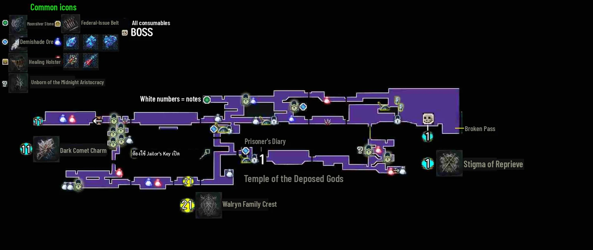
ด่านแรกของเกม เป็นคุกในวิหาร ทางลึกหลังประตูขังต้องกลับมาตอนท้ายเกมพร้อม Jailor's Key
เส้นทางในพื้นที่
- ไปซ้ายเก็บ Prisoner's Diary แล้วไปทางขวา ตรงทางแยกลงไปข้างล่างก่อน มี Healing Injection 2 อัน
- ห้องขังที่มีมอนสเตอร์กรีดร้องต้องใช้กุญแจ ยังเปิดไม่ได้ ปีนขึ้นไปจนเจอแท่น Chapel Alcove (จุดเซฟ)
- เหนือขึ้นไปมี Blue Haemolymph Shard (เติม Focus) แขวนบนกรง และรูปปั้นเติม Focus
- ขึ้นขวาไปเรื่อยๆ จนตัวละครพุ่งทะลุกระจกสี ดึงคันโยกเปิดทางออก ข้างนอกคือบอสแรก Giant Patron
ความลับ
- ตอนท้ายเกมใช้ Jailor's Key เปิดประตูขัง ไปซ้ายสุด ข้ามบันได แล้วตีกำแพงที่พังได้ หีบท้ายห้องคือ Dark Comet Charm
เช็กลิสต์ของสะสม
- Giant Patron — บอสแรก หน้าวิหาร. ได้ Stigma of Reprieve
- Stigma of Reprieve — ดรอปจาก Giant Patron. ปลดท่า parry
- Unborn #2/20 — ใน Temple of the Deposed Gods. ตำแหน่งดูไอคอนเปลวไฟเขียวบนแผนที่
- Walryn Family Crest — ช่วงลึกของ Temple. ต้องมี Jailor's Key
- Dark Comet Charm — ช่วงลึกของ Temple ซ้ายสุด หลังกำแพงลับ. ต้องมี Jailor's Key เพิ่มฮีลจาก parry 5% และดาเมจ parry 20%
ทิปสู้บอส
- Giant Patron (HP ราว 2,200): ทุบพื้นส่งคลื่นหิน ฟาดหลังตัวเรืองแสง และกระโดดทับ ท่ากระโดดให้กลิ้งไปหลังบอส ยิ่งเลือดน้อยคลื่นยิ่งไกลและออกทั้งสองข้าง อย่าลืมใส่ Healing Injection ไว้ในช่องใช้งาน
แหล่งข้อมูล: ShowGamer: Walkthrough · NODE Gamers: Trophy Guide (roadmap + ของสะสม) · Steam Guide: The Last Faith Bestiary (paladin181) · GamerHour: Dark Comet Charm · Steam Guide: 最後的信仰『中文簡易地圖流程』(鬼流) แผนที่ทั้งหมด
02 – Broken Pass
2 ชิ้น
Weapon×1 Unborn×1
- ต้องมีก่อนเข้า
- ไม่ต้องมีอะไร
- ทางเชื่อม
- Temple of the Deposed Gods · ทางซ้ายสุด
- Oxnevylle Manor · ทางขวาบนที่ป้ายบอกทาง
- City of Mythringal · ทางขวาล่าง ผ่านประตูรั้วแล้วผ่านสุสาน Mark's Key
- กลับมาทีหลัง
- ส่วนบนของ Broken Pass (Bestiary ระบุว่าเข้าได้หลังมี Propulsion Boots) Propulsion Boots (air dash)
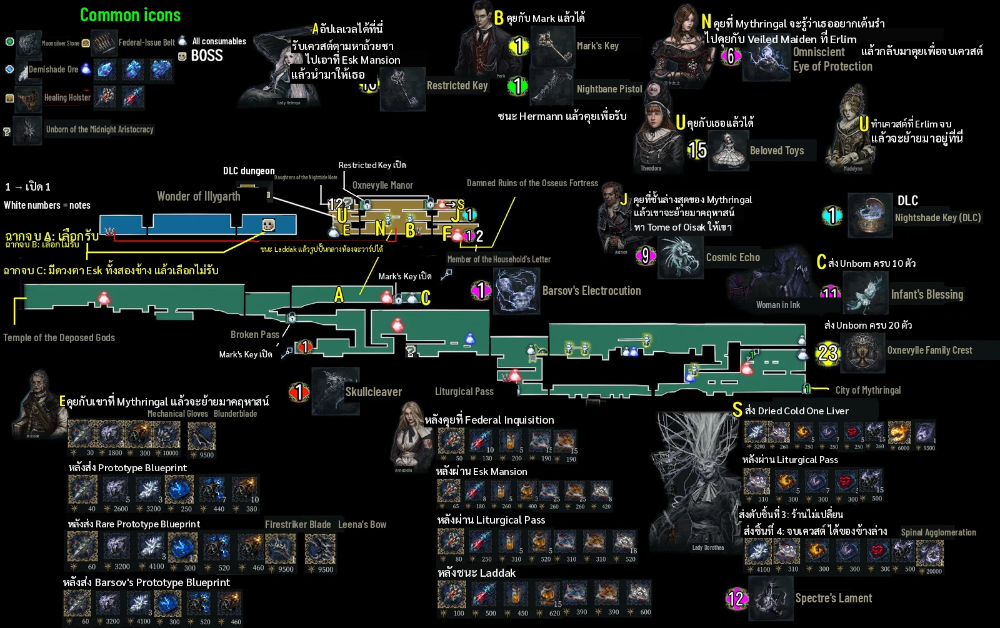
ทางเชื่อมหลักช่วงต้น มีป้ายบอกทาง ทางขวาบนไป Oxnevylle Manor ทางขวาล่างไป City of Mythringal
เส้นทางในพื้นที่
- ฆ่า infected pilgrim ข้ามสะพานจนถึงป้ายบอกทาง ไป Manor ก่อนเพื่อคุยกับ Helenya และรับ Mark's Key
- กลับมาที่ทางแยกแล้วลงข้างล่าง เปิดประตูรั้วขวาล่างด้วย Mark's Key แล้วผ่านสุสาน (กดลงพร้อมกระโดดเพื่อลงจากแท่นไม้)
- ไปทางซ้ายของสุสานก่อน หีบที่มุมระหว่างรูปปั้น 2 ตัวคือ Skullcleaver
- กลับไปทางขวา ลงบันไดจนเจอแท่น Old Runes ลงต่อแล้วตีปุ่มกลมบนอนุสาวรีย์เพื่อเปิดประตูไป Mythringal
NPC
- Woman in Ink: รับ Unborn of the Midnight Aristocracy ส่ง 10 ตัวได้ Infant's Blessing ครบ 20 ได้ Oxnevylle Family Crest (CommonSenseGamer บอกว่าเจอที่ Broken Pass ส่วน NODE บอกว่าแถว Oxnevylle Manor)
ความลับ
- ShowGamer พูดถึง Veiled Woman หลังประตูรั้วขวาแถวรถม้าด้วย
เช็กลิสต์ของสะสม
- Skullcleaver — สุสานทางลงไป Mythringal ฝั่งซ้าย. หีบตรงมุมระหว่างรูปปั้น 2 ตัว ขวานสาย STR
- Unborn #3/20 — ใน Broken Pass. ดูไอคอนเปลวไฟเขียวบนแผนที่
ทิปสู้บอส
แหล่งข้อมูล: ShowGamer: Walkthrough · GamesFuze: All Primary Weapon Locations · CommonSenseGamer: Weapons List · NODE Gamers: Trophy Guide (roadmap + ของสะสม) · CommonSenseGamer: All Spells · Steam Guide: The Last Faith Bestiary (paladin181) · Steam Guide: 最後的信仰『中文簡易地圖流程』(鬼流) แผนที่ทั้งหมด
03 – Oxnevylle Manor
19 ชิ้น
Gun×2 Key×2 Spell×9 Weapon×2 Ability×1 Up×1 Unborn×1 Quest×1
- ต้องมีก่อนเข้า
- ไม่ต้องมีอะไร
- ทางเชื่อม
- Broken Pass · ประตูหน้าคฤหาสน์
- Damned Ruins of the Osseus Fortress · ห้องขวาที่ Annabella ยืน ออกประตูด้านนอก ลากกล่องทางซ้ายแล้วกระโดดขึ้น Gravitational Ring
- DLC Awakened Ancients – โหมดใหม่ · ชั้น 2 ประตูซ้าย ห้องแท่นบูชาใหม่ (DLC Awakened Ancients) Nighthunter's Grappling Claw
- Wonder of Illygarth · รูปปั้นในคฤหาสน์ทำงานหลังชนะ Laddak ชนะ Lord Patryk Laddak
- กลับมาทีหลัง
- ชั้นบนของคฤหาสน์ (ดึงตัวด้วยตะขอ ใช้โคมระย้าขึ้นไป) Nighthunter's Grappling Claw
- ห้องซ้ายและขวาชั้นบนสุด กับ Lady Dorothea หลังกำแพงลวงตาในห้องขวา Forbidden Key
บ้านหลักของเกม อัปเลเวลได้กับ Helenya หน้าคฤหาสน์เท่านั้น NPC หลายคนจะย้ายมาอยู่ที่นี่ระหว่างเกม
เส้นทางในพื้นที่
- คุยกับ Helenya หน้าคฤหาสน์ (อัปเลเวลและรับเควสต์ Blessed Teacup)
- คุยกับ Mark ข้างใน ได้ Nightbane Pistol และ Mark's Key
- หีบในห้องกินข้าวคือเวท Barsov's Electrocution ใกล้เตาผิงมีจดหมาย
NPC
- Helenya: อัปเลเวล และให้ Forbidden Key เมื่อคืน Blessed Teacup
- Mark: ให้ Nightbane Pistol กับ Mark's Key และให้ Federal-Issue Belt เมื่อถึงเลเวล 15
- Mariano: เจอใน Mythringal แล้วย้ายมาที่นี่ ตีบวกอาวุธ ขาย Mechanical Gloves (10,000) กับ Blunderblade (9,500) และรับ Blueprint 3 ชิ้น (Barsov's Prototype Blueprint ทำให้ตีบวกได้ถึง +10)
- Annabella: ย้ายมาหลังให้ Gravitational Ring ขายของฮีลและยาแก้สถานะ
- Lady Dorothea: รับ Dried Cold One Liver แล้วปลดเวทในร้าน (ต้องมี Forbidden Key)
- Lady Annika, Aldrich, Theodora และ Madelyne ย้ายมาอยู่ที่นี่ตามเควสต์ของแต่ละคน
ความลับ
- แผนที่จีนเตือนไว้ว่าหลังชนะบอสสุดท้าย NPC ในคฤหาสน์จะหายหมด ทำเควสต์ให้จบก่อนนะคะ
เช็กลิสต์ของสะสม
- Nightbane Pistol — Mark ให้
- Mark's Key — Mark ให้. เปิดประตูรั้วใน Broken Pass
- Barsov's Electrocution — หีบในห้องกินข้าว. เวทไฟฟ้าแบบลำแสง
- Blunderblade — ร้าน Mariano 9,500. ซื้อได้ทันทีที่ Mariano มาอยู่คฤหาสน์
- Firestriker Blade — ร้าน Mariano 9,500. CommonSenseGamer บอกว่าขึ้นร้านหลังให้ Rare Prototype Blueprint ส่วน GamesFuze เห็นขึ้นหลังชนะ Manfredd
- Leena's Bow — ร้าน Mariano 9,500. ขึ้นร้านหลังให้ Rare Prototype Blueprint ต้องมี Mind 16 และ Instinct 12
- Mechanical Gloves — ร้าน Mariano 10,000. ปีนกำแพง
- Federal-Issue Belt #1 — Mark ให้ตอนเลเวล 15. พกกระสุนได้มากขึ้น
- Forbidden Key — Helenya ให้หลังคืน Blessed Teacup
- Unborn #1/20 — ใน Oxnevylle Manor. ดูไอคอนเปลวไฟเขียวบนแผนที่
- Oxnevylle Family Crest — รางวัลส่ง Unborn ครบ 20 ให้ Woman in Ink
- Infant's Blessing — Woman in Ink. ส่ง Unborn 10 ตัว ตาม CommonSenseGamer
- Combustion Rings — ร้าน Lady Dorothea. ขึ้นร้านเป็นชุดแรกหลังส่ง liver
- Accursed Phalanges — ร้าน Lady Dorothea. ขึ้นพร้อม Combustion Rings
- Nighttide's Dismissal — ร้าน Lady Dorothea. หลังส่ง liver 2 อัน
- Spectre's Lament — ร้าน Lady Dorothea. หลังส่ง liver ครบ 4
- Spinal Agglomeration — ร้าน Lady Dorothea. หลังส่ง liver ครบ 4
- Omniscient Eye of Protection — รางวัลเควสต์ Lady Annika
- Cosmic Echo — รางวัลเควสต์ Aldrich
ทิปสู้บอส
แหล่งข้อมูล: NODE Gamers: Trophy Guide (roadmap + ของสะสม) · ShowGamer: Walkthrough · Game Rant: How to Level Up · GamesFuze: All Primary Weapon Locations · CommonSenseGamer: Weapons List · ScreenRant: Leena's Bow · CommonSenseGamer: All Spells · Steam Guide: [Video] 100% Walkthrough · Steam Guide: 最後的信仰『中文簡易地圖流程』(鬼流) แผนที่ทั้งหมด
04 – City of Mythringal
11 ชิ้น
Weapon×2 Spell×2 Charm×2 Unborn×3 Boss×1 Quest×1
- ต้องมีก่อนเข้า
- Mark's Key
- ทางเชื่อม
- Broken Pass · ฝั่งซ้าย (สุสานและแท่น Old Runes)
- Federal Inquisition · ประตูใหญ่ East District หลังฟันโซ่ 3 จุด ทำลายโซ่ 3 จุด (ประตูใหญ่ Mythringal)
- Site Cave · ทางที่ Count Walrick เปิดให้ ไปขวาหนึ่งหน้าจอจาก West District (รูปปั้นช่องแหวน) Gravitational Ring
- High Walls of Mythringal · สุสานซ้ายของ Old Wymond ลากบล็อกหินแล้วขึ้นลิฟต์ไป Caterina's Church Gravitational Ring
- กลับมาทีหลัง
- ไฟมืด (Dark Fire) 4 จุดที่เปิดห้อง The Devourer of the Betrayed ส่วนใหญ่ต้องกระโดดสองชั้น Celestial Larva (double jump)
- ห้องท้าทายที่ Bestiary บอกว่ากลับมาเล่นได้หลังมี Celestial Larva Celestial Larva (double jump)
- บอส
- Old Wymond (ลับ)
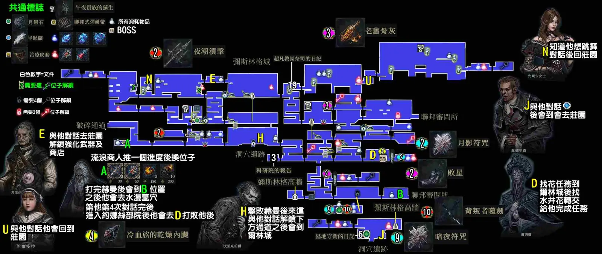
เมืองใหญ่กลางแผนที่ แบ่งเป็น West District กับ East District และแยกไปได้หลายพื้นที่
เส้นทางในพื้นที่
- ลงไปคุยกับ Old Wymond (พ่อค้า) ฆ่าคนปาโมโลตอฟแล้วเปิดแท่น Western Mythringal District
- ข้างนอกมีรูปปั้นที่มีช่องใส่แหวน ไว้กลับมาตอนมี Gravitational Ring
- ขึ้นสูงสุดหาปุ่มกลมบนรูปปั้น ตีแล้วบันไดจะลงมาที่ระเบียง เข้าไปคุยกับ Mariano ได้ Mechanical Bomb และชวนเขาไปคฤหาสน์
- ไปขวาจนเจอลิฟต์และแท่น Eastern District of Mythringal เข้าตึกขวาไปจนถึงประตูใหญ่ที่ล็อกไว้
- ระเบียงซ้ายมีหีบ Old Ashes จากนั้นฟันโซ่ 3 เส้นเพื่อปลดกลอนประตูไป Federal Inquisition
NPC
- Old Wymond: พ่อค้า (ช่วงท้ายเกมกลายเป็นบอสลับตรงที่ Lucyl เคยยืน)
- Mariano: ชวนไปอยู่คฤหาสน์
- Lucyl: ขอดอกไม้ไว้อาลัยสามี ให้ Water Well Flowers จาก Erlim
- Lady Annika: อยู่ตึกบนซ้าย ต้องใช้ตะขอขึ้นไปหา (หลังได้ Grappling Claw)
- Theodora: อยู่บริเวณบนของเมือง (เควสต์ Child's Play)
- Count Walrick: คุยในลานกลางแล้วเปิดทางลงถ้ำ (Site Cave)
ความลับ
- Nighttide's Rout: จากแท่นเซฟไปซ้ายแล้วขึ้นบันได ตรงบันไดที่มีลังด้านหลังให้ตีกำแพงที่พังได้ เดินซ้ายไปจนเจอหีบ
- Corrupted Star: ไปทางขวาจนสุดมุมขวาล่างแล้วกระโดดขึ้นไปหาหีบ (ShowGamer เรียกว่า Infected Star)
- Moonshade Charm: ห้องเล็กทางขวาของจุดที่ Lucyl ยืน มีหีบใบเดียว
- Nocturnal Charm: ห้องลับที่มีหีบ 4 ใบ
- The Devourer of the Betrayed: ตีไฟมืด 4 จุดทั่วเมือง แล้วนอนบนแท่นในสวนกลางเมืองเพื่อวาร์ปไปห้องหีบ
เช็กลิสต์ของสะสม
- Nighttide's Rout — หลังกำแพงลับ ซ้ายของแท่นเซฟ. ดาบเร็ว
- The Devourer of the Betrayed — ห้องลับหลังตีไฟมืด 4 จุด. ส่วนใหญ่ต้องกระโดดสองชั้น
- Old Ashes — หีบที่ระเบียงซ้าย ใกล้ประตูใหญ่ East District
- Corrupted Star — มุมขวาล่างของเมือง กระโดดขึ้นไปหาหีบ
- Moonshade Charm — ห้องเล็กทางขวาของ Lucyl. ดาเมจและป้องกันกายภาพ +15%
- Nocturnal Charm — ห้องลับหีบ 4 ใบ. Focus และ HP สูงสุด +10%
- Unborn #4/20 — City of Mythringal. ดูไอคอนบนแผนที่
- Unborn #5/20 — City of Mythringal. ดูไอคอนบนแผนที่
- Unborn #6/20 — City of Mythringal. ดูไอคอนบนแผนที่
- Old Wymond (ลับ) — ตรงที่ Lucyl เคยยืน. โผล่หลังเปิดแท่น Altar of the Verb of Junas ได้ liver อันสุดท้าย
- Dried Cold One Liver #4 — ดรอปจาก Old Wymond. ส่ง Lady Dorothea
ทิปสู้บอส
- Old Wymond (ลับ, HP ราว 35,000): ท่าคล้าย Cold One Beast ใน High Walls ส่ง liver 3 อันแรกให้ Dorothea ก่อนสู้ เพราะ NODE เจอบั๊กไม่ดรอป liver ถ้าไม่ได้ให้โหลดเซฟก่อนแตะแท่น
แหล่งข้อมูล: ShowGamer: Walkthrough · NODE Gamers: Trophy Guide (roadmap + ของสะสม) · GamesFuze: All Primary Weapon Locations · CommonSenseGamer: Weapons List · CommonSenseGamer: All Spells · ProdigyGamers: All Charm Locations · Steam Guide: The Last Faith Bestiary (paladin181) · Steam Guide: 最後的信仰『中文簡易地圖流程』(鬼流) แผนที่ทั้งหมด
05 – Federal Inquisition
8 ชิ้น
Boss×2 Ability×2 Key×1 Up×1 Spell×1 Unborn×1
- ต้องมีก่อนเข้า
- ทำลายโซ่ 3 จุด (ประตูใหญ่ Mythringal)
- ทางเชื่อม
- City of Mythringal · ประตูใหญ่ East District และลิฟต์ฝั่งซ้ายล่างที่ออกไปเมือง
- กลับมาทีหลัง
- ห้อง Technological Lens ชั้นล่าง (ปีนกำแพงสองข้าง ประตูต้องใช้กุญแจ) Mechanical GlovesHermann's Office Key
- ประตูลวงตาทางขวาหลังห้อง Lens มี Demishade Ore ในโลง Technological Lens
- บอส
- Winged Pale Lament ×2 · Dr. Ridley Hermann
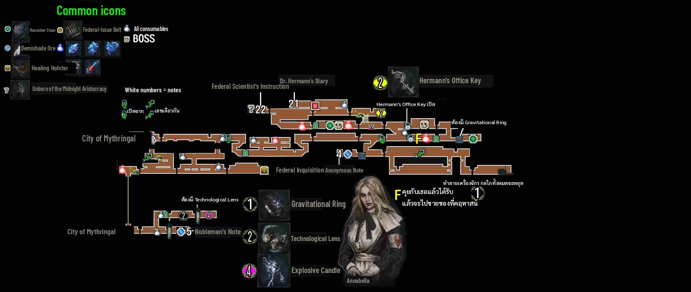
ตึกวิจัยของสหพันธ์ มีบอสสองด่านติดกัน และเป็นที่ได้ Gravitational Ring
เส้นทางในพื้นที่
- เปิดแท่น Inquisitorial Foyer เดินขวา ระวังกับดักไฟฟ้าและ Necrogash (ศัตรูคล้ายค้างคาวคน)
- ดึงคันโยกเปิดลิฟต์และตีปุ่มกลมบนรูปปั้น ลงไปทำลายเครื่องจักรในห้องบล็อกตกเพื่อหยุดบล็อก
- เปิดแท่น Sanctuary of the Inquisitors แล้วไปซ้ายสู้ Winged Pale Lament สองตัว
- ห้องทำงานขวามี Hermann's Office Key บนโต๊ะ ดึงคันโยกทำทางลัดกลับแท่น
- ประตูขวาของแท่นคือบอส Dr. Ridley Hermann หลังชนะลงไปคุยกับ Annabella ได้ Gravitational Ring
- ลากกล่องหินทางซ้ายและขวาเพื่อเก็บ Demishade Ore กับ Moonsilver Stone
NPC
- Annabella: ให้ Gravitational Ring แล้วย้ายไปคฤหาสน์
ความลับ
- Healing Holster: ทางแยกชั้นล่างของ foyer ไปขวา วิ่งและกลิ้งลอดบล็อกที่ตกลงมาจนถึงหีบ
- Explosive Candle: ประตูทางขวาตามจุดในแผนที่ของ CommonSenseGamer
- หลังได้แหวนให้แวะเปิดแท่น Caterina's Church ใน High Walls ไว้เลย (NODE ใส่ไว้ในช่วงนี้)
เช็กลิสต์ของสะสม
- Winged Pale Lament ×2 — ซ้ายของแท่น Sanctuary of the Inquisitors
- Dr. Ridley Hermann — ขวาของแท่น Sanctuary
- Gravitational Ring — Annabella ให้หลังชนะ Hermann. ลากบล็อกหิน
- Hermann's Office Key — โต๊ะในห้องทำงานด้านขวา
- Technological Lens — ห้องชั้นล่าง ต้องมี Mechanical Gloves และ Hermann's Key. ผ่านประตูลวงตา จำเป็นต่อฉากจบแท้
- Healing Holster #1 — ลอดบล็อกตกชั้นล่างของ foyer. พก Healing Injection ได้เพิ่ม 2
- Explosive Candle — Federal Inquisition
- Unborn #7/20 — Federal Inquisition. ดูไอคอนบนแผนที่
ทิปสู้บอส
- Winged Pale Lament ×2 (ตัวละราว 1,630 HP): แพ้ไฟมาก ใช้ Combustion Powder หรือเวทไฟ เห็นกรงเล็บกะพริบให้วิ่งหนีหรือกระโดดข้าม ตอนบินขึ้นพ่นเลือดให้หนีก่อนแล้วค่อยกลับมากระโดดตี
- Dr. Ridley Hermann (เฟสแรกราว 3,000 เฟสสองราว 2,400): เฟสแรกหลบไปอยู่หลังเขา เฟสสองตีตอนเขาโผล่ขึ้นจากบ่อเลือดเท่านั้น ตอนลอยให้หลบกระสุนก่อน ผู้เล่นในคอมเมนต์ Bestiary บอกว่าไฟฟ้ากับ Magnetic Bomb ได้ผลดี (ยังไม่ยืนยัน)
แหล่งข้อมูล: ShowGamer: Walkthrough · NODE Gamers: Trophy Guide (roadmap + ของสะสม) · CommonSenseGamer: All Spells · Steam Guide: [Video] 100% Walkthrough · Steam Guide: The Last Faith Bestiary (paladin181) · Steam Guide: 最後的信仰『中文簡易地圖流程』(鬼流) แผนที่ทั้งหมด
06 – Site Cave
3 ชิ้น
Charm×1 Up×1 Unborn×1
- ต้องมีก่อนเข้า
- Gravitational Ring
- ทางเชื่อม
- City of Mythringal · ทางที่ Count Walrick เปิดให้
- Drowned Crypt · พื้นถล่มลงไปหลุมกว้างแล้วไต่ลงต่อ
- Marshland of Shadows · หลุมที่พื้นถล่ม ใช้ตะขอขึ้นหิ้งซ้ายไป Soggy Shelter Nighthunter's Grappling Claw
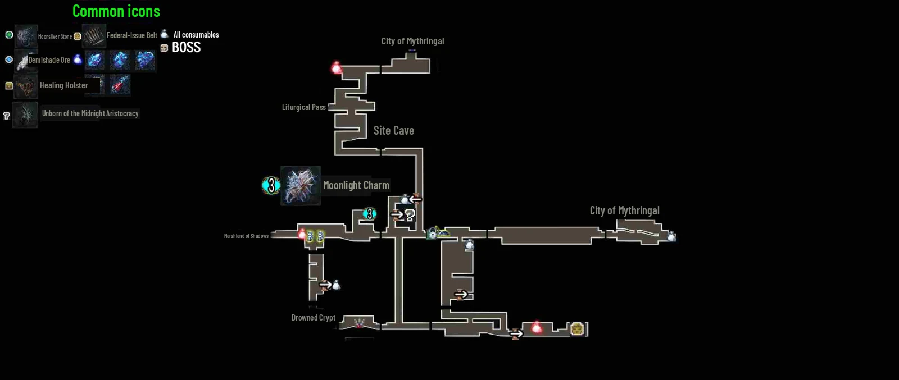
ถ้ำใต้ Mythringal ทางผ่านลงไป Drowned Crypt และทางไป Lower Mythringal ที่ Aldrich อยู่
เส้นทางในพื้นที่
- ไปซ้าย ลงปล่อง ระวังหนามที่ตกลงมา เก็บ Blue Haemolymph
- ไปขวาแล้วลงลิฟต์ ผ่านลิฟต์ตัวถัดไปเข้าถ้ำซ้าย ถีบกำแพงขึ้นไปเปิดโลงได้ Moonlight Charm
- ไปซ้ายจนพื้นถล่ม ลงหลุมกว้างที่มีจุดเกาะตะขอ แล้วไต่ลงไปถึง Drowned Crypt
NPC
- Aldrich: เจอใน Lower Mythringal ซึ่งเข้าทาง Site Cave (NODE) คุยแล้วจะย้ายไปคฤหาสน์
เช็กลิสต์ของสะสม
- Moonlight Charm — โลงในถ้ำซ้าย ต้องถีบกำแพงขึ้นไป. ดาเมจและป้องกันไฟฟ้า +15% (ProdigyGamers บอกว่าใช้ตะขอขึ้นไป)
- Federal-Issue Belt #2 — Site Cave
- Unborn #8/20 — Site Cave. ดูไอคอนบนแผนที่
ทิปสู้บอส
แหล่งข้อมูล: ShowGamer: Walkthrough · NODE Gamers: Trophy Guide (roadmap + ของสะสม) · ProdigyGamers: All Charm Locations · Steam Guide: [Video] 100% Walkthrough · Steam Guide: 最後的信仰『中文簡易地圖流程』(鬼流) แผนที่ทั้งหมด
07 – Drowned Crypt
11 ชิ้น
Boss×2 Key×2 Ability×1 Weapon×1 Spell×1 Quest×2 Unborn×1 Charm×1
- ต้องมีก่อนเข้า
- Gravitational Ring
- ทางเชื่อม
- Site Cave · ลิฟต์และทางขึ้นใกล้แท่น Crypt Entrance
- Marshland of Shadows · หลุมที่ตกลงมา ใช้ตะขอไปหิ้งซ้าย Nighthunter's Grappling Claw
- กลับมาทีหลัง
- ผนังใส่ Family Crest 4 อันที่ก้นสุสาน มีบอสลับ Nyxaroth และ Bright Comet Charm Family Crest ครบ 4 อัน
- บอส
- Edwyn, the Shadowscourge Horror · Nyxaroth, the Eldritch Wight (ลับ)
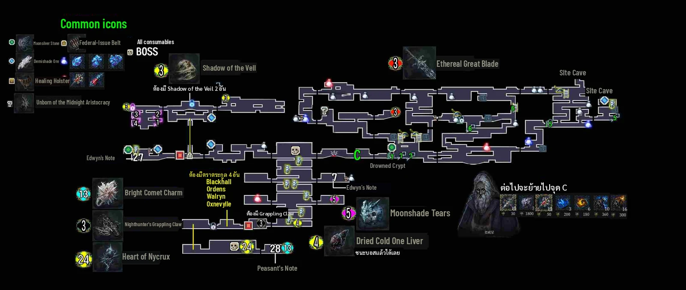
สุสานใต้น้ำขนาดใหญ่ มีปริศนาบล็อกหลายจุด จบด้วยบอส Edwyn แล้วได้ตะขอ
เส้นทางในพื้นที่
- ลงไปเปิดแท่น Crypt Entrance ดึงคันโยกเรียกลิฟต์ เดินขวาขึ้นบันไดและแท่นที่ถล่มได้
- ฝั่งขวาสุดมี Powder of the Damned, Moonsilver Stone และ Cemetery Groundskeeper's Diary
- ลงลึกต่อ ดันบล็อกหินไปวางบนแผ่นกด 2 จุดเพื่อเปิดทาง จะเจอ Old Wymond และแท่น Chasm of the Fallen
- ห้องปริศนา: ดันบล็อกตามลำดับ shield, sword, spear, axe ได้กะโหลก Shadow of the Veil อันแรก ถ้าผิดให้ออกแล้วเข้าใหม่ หรือกดปุ่มใต้แท่นไม้
- กะโหลกอันที่สองอยู่เหนือทางเข้าห้องถัดไป วางครบสองอันสะพานจะเปิด ลงลิฟต์ไปสู้ Edwyn
- หลังชนะไปห้องซ้ายเปิดหีบได้ Nighthunter's Grappling Claw
NPC
- Old Wymond: เจออีกครั้งก่อนแท่น Chasm of the Fallen
ความลับ
- Ethereal Great Blade: ห้องใหญ่ซ้ายสุด ออกช่องด้านบนแล้วไปห้องขวา หีบอยู่สุดห้อง
- Moonshade Tears: ห้องหลังประตูขวาตามจุดในแผนที่ของ CommonSenseGamer
เช็กลิสต์ของสะสม
- Edwyn, the Shadowscourge Horror — ใต้สะพานหลังวางกะโหลก 2 อัน. ได้ Dried Cold One Liver #1
- Shadow of the Veil #1 — ห้องปริศนาบล็อก
- Shadow of the Veil #2 — เหนือทางเข้าห้องถัดไป
- Nighthunter's Grappling Claw — หีบห้องซ้ายหลังชนะ Edwyn
- Ethereal Great Blade — ห้องซ้ายสุด ออกช่องบนแล้วไปห้องขวา
- Moonshade Tears — Drowned Crypt
- Dried Cold One Liver #1 — ดรอปจาก Edwyn. ส่ง Lady Dorothea
- Unborn #9/20 — Drowned Crypt. ดูไอคอนบนแผนที่
- Nyxaroth, the Eldritch Wight (ลับ) — ผนังก้นสุสาน ใส่ Family Crest 4 อัน. ได้ Heart of Nycrux อันที่ 5
- Heart of Nycrux (Sepolcro) #5 — หลังชนะ Nyxaroth
- Bright Comet Charm — ห้องหลังชนะ Nyxaroth. ค่า Power ลดลง 15%
ทิปสู้บอส
- Edwyn (HP ราว 9,000): แหล่งที่หนูเช็คไม่มีทิปละเอียดของบอสนี้ค่ะ
- Nyxaroth (ลับ, HP ราว 48,000): สลับสองช่วง คือช่วงที่ตีได้ กับช่วงที่ต้องทำลายคริสตัลลอยเพื่อเรียกเขากลับมา ที่ 50% เรียกคริสตัล 2,500 HP กับซอมบี้ ที่ 15% เรียกคริสตัล 3,000 HP
แหล่งข้อมูล: ShowGamer: Walkthrough · NODE Gamers: Trophy Guide (roadmap + ของสะสม) · GamesFuze: All Primary Weapon Locations · CommonSenseGamer: Weapons List · CommonSenseGamer: All Spells · ProdigyGamers: All Charm Locations · Steam Guide: The Last Faith Bestiary (paladin181) · Steam Guide: [Video] 100% Walkthrough · Steam Guide: 最後的信仰『中文簡易地圖流程』(鬼流) แผนที่ทั้งหมด
08 – Marshland of Shadows
1 ชิ้น
Unborn×1
- ต้องมีก่อนเข้า
- Nighthunter's Grappling Claw
- ทางเชื่อม
- Drowned Crypt · หิ้งซ้ายของหลุมที่พื้นถล่ม (Soggy Shelter)
- City of Erlim · สุดทางซ้าย
- Liturgical Pass · จากแท่น Soggy Shelter ขึ้นถ้ำขวา ขึ้นลิฟต์ตัวที่สอง แล้วออกประตูซ้ายใกล้ยอด ต้องแดชกลางอากาศ Propulsion Boots (air dash)
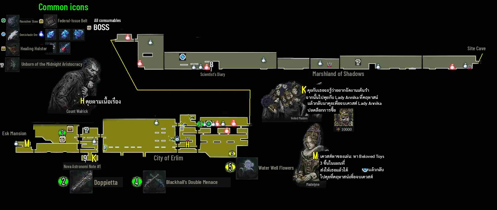
หนองน้ำทางเดียวที่พาไป City of Erlim และมีทางถ้ำแยกขึ้นไป Liturgical Pass
เส้นทางในพื้นที่
- ใช้ตะขอขึ้นหิ้งซ้ายของหลุม เก็บ Dreamcatcher Pastilles แล้วเปิดแท่น Soggy Shelter
- ฆ่า Witch Summoner ด้านบนก่อน ขึ้นบันไดไปเปิดแท่น Witch's Mound แล้วไปต่อจนถึง Erlim
เช็กลิสต์ของสะสม
- Unborn #10/20 — Marshland of Shadows. ดูไอคอนบนแผนที่
ทิปสู้บอส
แหล่งข้อมูล: ShowGamer: Walkthrough · NODE Gamers: Trophy Guide (roadmap + ของสะสม) · Steam Guide: The Last Faith Bestiary (paladin181) · Steam Guide: 最後的信仰『中文簡易地圖流程』(鬼流) แผนที่ทั้งหมด
09 – City of Erlim
8 ชิ้น
Boss×1 Gun×2 Up×1 Quest×2 Key×1 Unborn×1
- ต้องมีก่อนเข้า
- Nighthunter's Grappling Claw
- ทางเชื่อม
- Marshland of Shadows · ฝั่งขวา (สะพานที่โดนปืนใหญ่ยิง)
- Esk Mansion · ฝั่งซ้ายหลังบอส Starborn Nighthunter
- กลับมาทีหลัง
- Second Skin จาก Veiled Maiden (10,000) หลังจบเควสต์ Lady Annika
- บอส
- Starborn Nighthunter
เมืองที่ถูกโจมตี มีเควสต์หลายสายและเป็นทางเข้า Esk Mansion
เส้นทางในพื้นที่
- ลงบันไดสองชั้น ฆ่า Flying Thing เก็บ Healing Injection แล้วเปิดแท่น Erlim Gate
- ไปขวาจนสุดทางลง เก็บ Water Well Flowers ที่มุมขวาล่างไว้ให้ Lucyl
- ย้อนซ้าย ใช้ตะขอขึ้นที่สูง ปีนโซ่ไปดึงคันโยกทำทางลัด แล้วไปพบ Lisa ที่ห้องบนซ้าย
- ตึกขวาของจุดที่ Lisa ยืนมี Magnetic Bomb ห้องถัดไปเจอ Madelyne
- ลงลึกเจอ Veiled Maiden กับโน้ต Nova Astronomi Note #1 แล้วออกซ้ายไปสู้ Starborn Nighthunter
NPC
- Lisa: เจอที่ห้องบนซ้าย
- Madelyne: เริ่มเควสต์ Child's Play (ส่งของเล่น 3 ชุด)
- Veiled Maiden: เควสต์ Lady Annika และขาย Second Skin
เช็กลิสต์ของสะสม
- Starborn Nighthunter — ลานซ้ายของเมือง. ได้ Doppietta
- Doppietta — ดรอปจาก Starborn Nighthunter
- Blackhall's Double Menace — City of Erlim. ตำแหน่งดูไอคอนสีเขียวบนแผนที่
- Healing Holster #3 — City of Erlim. ตำแหน่งดูไอคอนบนแผนที่
- Water Well Flowers — มุมขวาล่างของ Erlim. ส่ง Lucyl
- Second Skin — ซื้อจาก Veiled Maiden 10,000. ต้องมีก่อนชนะ Laddak
- Beloved Toys ชุดที่ 1 — Theodora ให้ตอนคุยที่คฤหาสน์. ให้ Madelyne
- Unborn #11/20 — City of Erlim. ดูไอคอนบนแผนที่
ทิปสู้บอส
- Starborn Nighthunter (HP ราว 3,450): เหมือนเวอร์ชันกระจกของ Eryk ระวังท่ากระโดดฟัน อย่าคอมโบยาวเกินไป Bestiary บอกว่าเขาฮีลตัวเองได้ทั้งจาก parry และ Healing Injection
แหล่งข้อมูล: ShowGamer: Walkthrough · NODE Gamers: Trophy Guide (roadmap + ของสะสม) · Steam Guide: [Video] 100% Walkthrough · Steam Guide: The Last Faith Bestiary (paladin181) · Steam Guide: 最後的信仰『中文簡易地圖流程』(鬼流) แผนที่ทั้งหมด
10 – Esk Mansion
12 ชิ้น
Boss×2 Ability×1 Weapon×1 Spell×1 Quest×4 Up×1 Unborn×2
- ต้องมีก่อนเข้า
- Nighthunter's Grappling Claw
- ทางเชื่อม
- City of Erlim · ประตูซ้ายของ Erlim (แท่น Hall of Mirrors)
- Telwynill Village · ทางลับจากบ้านใน Telwynill (portal หลังกำแพงที่พังได้)
- กลับมาทีหลัง
- บอสลับ Harbinger of Nightmare (ตามหัวกะโหลกลอยไปทางลับ) ได้ Esk's Left Eye Technological LensCelestial Larva (double jump)Second Skin
- บอส
- Yegor & Leena · Harbinger of Nightmare (ลับ)
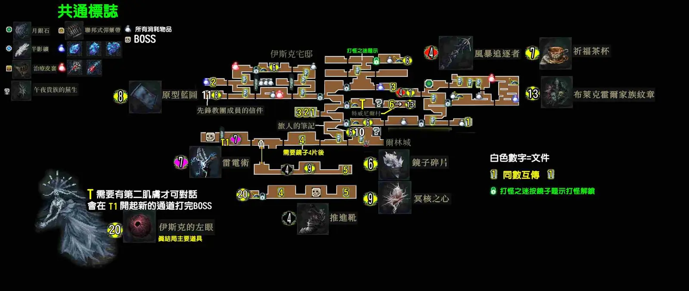
คฤหาสน์กระจก ต้องเก็บเศษกระจก 4 ชิ้นมาซ่อมกระจกบานใหญ่ แล้วจะได้ Propulsion Boots
เส้นทางในพื้นที่
- ดึงตัวขึ้นห่วงเหนือแท่นเซฟ เก็บเศษกระจกชิ้นแรก
- ผ่านกระจกบานแรก หลบกับดักกระจกไฟ ห้องนอนซ้ายมีหีบ Stormchaser Macewhip และ Blessed Teacup
- ดึงคันโยกเปิดประตูล่าง ผ่านดงศัตรูแล้วเก็บเศษชิ้นที่ 2 ซ่อมกระจกบานที่สอง ข้างในมี Prototype Blueprint
- เก็บเศษชิ้นที่ 3 และ 4 (ต้องเคลียร์ศัตรูทุกห้องก่อน ประตูมุมขวาบนถึงจะเปิด) แล้วซ่อมกระจกใหญ่
- สู้ Yegor & Leena แล้วเข้ากระจกบานสุดท้าย ได้ Heart of Nycrux จากนั้นเปิดโลงได้ Propulsion Boots
- เรียกลิฟต์ทางซ้ายขึ้นไป ห้องซ้ายมีหีบ Thunder Conjuration
NPC
- ผีผู้หญิงใน Esk Mansion: ต้องไปหาผ่านทางลับจาก Telwynill (จำเป็นต่อการได้ดวงตา Esk)
ความลับ
- Blackhall Family Crest อยู่ในส่วนของ Esk Mansion ที่เข้าทางลับจาก Telwynill (NODE)
เช็กลิสต์ของสะสม
- Yegor & Leena — ห้องกระจกใหญ่
- Propulsion Boots — โลงหลังบอส. แดชกลางอากาศ
- Stormchaser Macewhip — ห้องนอนหลังกระจกบานแรก
- Thunder Conjuration — ห้องซ้ายหลังขึ้นลิฟต์ ฝั่งล่างซ้ายของ Esk
- Blessed Teacup — หลังกระจกบานแรก. คืน Helenya ได้ Forbidden Key
- Prototype Blueprint — หลังกระจกบานที่สอง. ให้ Mariano
- Heart of Nycrux (Sepolcro) #1 — กระจกบานสุดท้ายหลังบอส
- Blackhall Family Crest — ส่วนลับที่เข้าทาง Telwynill
- Harbinger of Nightmare (ลับ) — ทางลับตามหัวกะโหลกลอย. ได้ Esk's Left Eye
- Esk's Left Eye — ดรอปจาก Harbinger of Nightmare. สำหรับฉากจบแท้
- Unborn #12/20 — Esk Mansion. ดูไอคอนบนแผนที่
- Unborn #13/20 — Esk Mansion. ดูไอคอนบนแผนที่
ทิปสู้บอส
- Yegor & Leena (ราว 6,000 และ 8,000 HP): โฟกัสตี Yegor ก่อน แล้ว Leena จะรับมือง่ายขึ้น
- Harbinger of Nightmare (ลับ, HP รวมราว 75,000 แต่ต้องลดจริงประมาณ 38,000): ช่วงแรกหัวโจมตีทีละหัว ใช้ช่วงนี้จำท่า พอฆ่าได้ 2 หัว หัวที่เหลือจะโจมตีพร้อมกัน
แหล่งข้อมูล: ShowGamer: Walkthrough · NODE Gamers: Trophy Guide (roadmap + ของสะสม) · GamesFuze: All Primary Weapon Locations · CommonSenseGamer: Weapons List · CommonSenseGamer: All Spells · Steam Guide: The Last Faith Bestiary (paladin181) · Steam Guide: 最後的信仰『中文簡易地圖流程』(鬼流) แผนที่ทั้งหมด
11 – Liturgical Pass
13 ชิ้น
Boss×1 Ability×1 Quest×3 Weapon×1 Gun×1 Spell×1 Charm×1 Up×2 Unborn×2
- ต้องมีก่อนเข้า
- Propulsion Boots (air dash)
- ทางเชื่อม
- Marshland of Shadows · ถ้ำจาก Soggy Shelter
- Broken Pass · Bestiary แยกส่วนบนของ Broken Pass ไว้หลังได้ Propulsion Boots หนูยังไม่ได้ยืนยันว่าเชื่อมกับที่นี่ตรงไหน Propulsion Boots (air dash)
- กลับมาทีหลัง
- ประตูก้อนเนื้อสีแดง มี Curse of the Burned และ Rare Prototype Blueprint Lost Mark of Transcendence
- หิ้งสูงใกล้แท่น Outside the Great Church มี Dried Cold One Liver #2 และของเล่นชุดที่ 3 Celestial Larva (double jump)
- บอส
- The Burnt Apostate
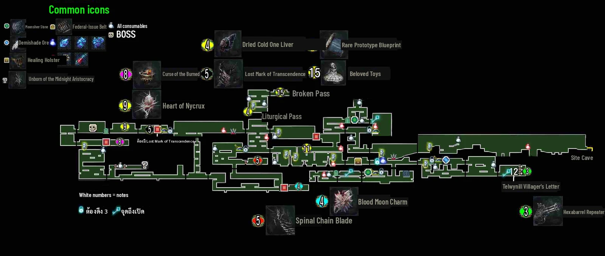
เส้นทางโบสถ์ใหญ่ ต้องดึงคันโยก 3 จุดเปิดประตูโบสถ์ และเป็นที่ได้ Lost Mark of Transcendence
เส้นทางในพื้นที่
- เปิดแท่น Old Churchyard ลงบันไดหาประตูล็อกทางซ้าย ไปขวาแล้วกระโดดลง ใช้เถาวัลย์บนผนังชะลอการตก
- ดึงคันโยกตัวแรกปลดกลอนประตูใหญ่ กำแพงขวาพังได้ ข้างในมีโลง Hexabarrel Repeater
- ดันบล็อกหินลงไปบนหนามแล้วแดชข้ามหลุม ดึงคันโยกตัวที่สอง
- ใช้ตะขอขึ้นเหนือประตู ถีบกำแพงขึ้นไป ชนะดงศัตรูแล้วดึงคันโยกตัวที่สามที่ระเบียงขวา
- หลังประตูมี Healing Holster ขึ้นต่อไปเปิดแท่น Outside the Great Church
- ระวัง Giant Patron ที่ขว้างหินในทางเดินแคบ หลบในหลุม แล้วขึ้นไปจนถึงบอส Burnt Apostate
- ห้องขวาหลังบอสได้ Heart of Nycrux แล้วได้ Lost Mark of Transcendence ใช้พังประตูขวาได้เลย
ความลับ
- Spinal Chain Blade: จากแท่นบนสุดไปซ้าย ลงหลายชั้น ไปขวาจนถึงทางเดินที่มีรูบนพื้น ปีนกำแพงขึ้นไปซ้ายสุด ขึ้นบันไดแล้วเข้าห้องขวา
- Rare Prototype Blueprint: หลังประตูสีแดงเป็นห้องระฆังแตก ลงบันไดไปสู้ดงศัตรู ทำลายรูปปั้น หีบอยู่บนหิ้งซ้าย
เช็กลิสต์ของสะสม
- The Burnt Apostate — ยอดโบสถ์. มี 2 เฟส
- Lost Mark of Transcendence — ห้องหลังบอส. พังประตูสีแดงและแปลงร่าง
- Heart of Nycrux (Sepolcro) #2 — หลังบอส ก่อนเก็บ Lost Mark
- Spinal Chain Blade — ห้องขวาหลังทางเดินที่มีรู
- Hexabarrel Repeater — โลงหลังกำแพงขวาใกล้คันโยกตัวแรก
- Curse of the Burned — หลังประตูสีแดง
- Blood Moon Charm — Liturgical Pass. ดาเมจและป้องกันเลือด +15%
- Healing Holster #2 — หลังประตูที่เปิดด้วยคันโยก 3 ตัว
- Rare Prototype Blueprint — หลังประตูสีแดง หีบบนหิ้งซ้าย. ปลด Leena's Bow และ Firestriker Blade
- Dried Cold One Liver #2 — จากแท่น Outside the Great Church ไปขวาแล้วขึ้น. ต้องมี Celestial Larva
- Beloved Toys ชุดที่ 3 — จุดเดียวกับ liver #2. ให้ Madelyne
- Unborn #14/20 — Liturgical Pass. ดูไอคอนบนแผนที่
- Unborn #15/20 — Liturgical Pass. ดูไอคอนบนแผนที่
ทิปสู้บอส
- The Burnt Apostate (เฟสแรกราว 6,800 เฟสสองราว 9,250): เลือดเยอะและมีสองเฟส แต่ส่งสัญญาณท่าชัด ใช้เวลาจำท่าก่อนแล้วค่อยลงมือ
แหล่งข้อมูล: ShowGamer: Walkthrough · NODE Gamers: Trophy Guide (roadmap + ของสะสม) · CommonSenseGamer: Weapons List · ScreenRant: Leena's Bow · CommonSenseGamer: All Spells · ProdigyGamers: All Charm Locations · Steam Guide: [Video] 100% Walkthrough · Steam Guide: The Last Faith Bestiary (paladin181) · Steam Guide: 最後的信仰『中文簡易地圖流程』(鬼流) แผนที่ทั้งหมด
12 – Damned Ruins of the Osseus Fortress
10 ชิ้น
Boss×2 Weapon×3 Charm×2 Quest×1 Unborn×2
- ต้องมีก่อนเข้า
- Gravitational Ring
- ทางเชื่อม
- Oxnevylle Manor · ประตูนอกห้อง Annabella (แท่น Ruined Outpost)
- Telwynill Village · จาก Frozen Caverns ขึ้นซ้าย ผ่านบอส Voracious Terror ไปแท่น Telwynill Bridge Propulsion Boots (air dash)แท่นเลือด/ถ้วยเลือด 4 จุด
- กลับมาทีหลัง
- ช่องว่างใน Frozen Caverns และแท่นเลือดบางจุด Propulsion Boots (air dash)
- Moonshadow Lake: ตีกำแพงลับในห้องที่มีผลไม้ระเบิด ลงบันไดแล้วไปซ้าย
- บอส
- Voracious Terror · Starlight Beast of Illygarth (ลับ)
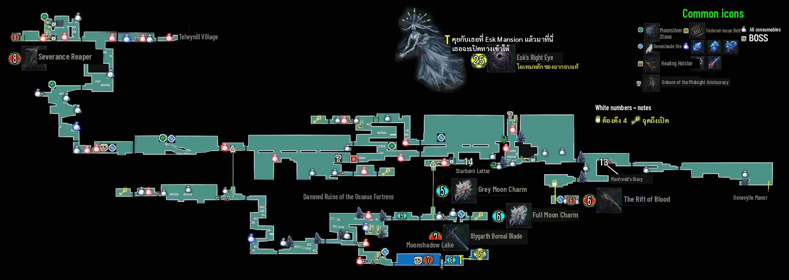
ซากป้อมหิมะ พื้นที่นี้รวม Frozen Caverns และทะเลสาบ Moonshadow Lake (บอสลับ) ไว้ด้วย
เส้นทางในพื้นที่
- เปิดแท่น Ruined Outpost หยิบระเบิดบนแท่นขวาไปปาทำลายทางตัน (ต้องรีบถือไปให้ทัน)
- ตีปุ่มกลมบนรูปปั้นเปิดประตูด้านบน ลงไปในหลุมเก็บโน้ตของ Bornstellar เข้าป้อมซ้ายแล้วเปิดแท่น
- ข้ามสะพาน (ระวังตก) ไปตึกที่มีลิฟต์ เปิดแท่นทางซ้ายก่อนแล้วลงลิฟต์ไป Frozen Caverns
- ตีแท่นเลือด 4 จุด: ซ้ายของแท่น Frozen Caverns, ใต้สะพานผีหลังตีกำแพงสุดทาง, หลังทางตันสองจุดมุมขวาบนของห้องผลไม้ระเบิด และกำแพงขวาของลิฟต์
- ครบแล้วกลับแท่น Frozen Caverns ขึ้นลิฟต์ไปซ้าย แดชข้ามช่อง สู้ Voracious Terror แล้วปีนขึ้นไปจนถึงแท่น Telwynill Bridge
ความลับ
- Severance Reaper: จากแท่นไปซ้ายจนถึงห้องใหญ่ที่มีประตูล็อกสองบาน ปีนขึ้นหิ้งแรกแล้วออกหน้าต่างซ้ายที่มีก้อนน้ำแข็ง ลงไปผ่านดงศัตรูแล้วเข้าประตูซ้าย
- The Rift of Blood: ตีแท่นเลือดครบ 4 จุด แล้วจากแท่น Ruined Outpost ไปซ้าย ลงล่างสุด แล้วซ้ายอีกที นอนบนแท่นเพื่อวาร์ปไปห้องโลง 4 ใบ อยู่ใบที่สาม
- Moonshadow Lake: บอสลับ Starlight Beast of Illygarth (GamesFuze เตือนว่ายากมาก ให้กลับมาตอนแข็งแรงแล้ว) ห้องขวาหลังบอสมี Full Moon Charm และทางไปเอา Esk's Right Eye
- Grey Moon Charm: ห้องหลังทางตันสองจุดมุมขวาบนของห้องผลไม้ระเบิด
เช็กลิสต์ของสะสม
- Voracious Terror — Frozen Caverns ทางซ้ายบน
- Starlight Beast of Illygarth (ลับ) — Moonshadow Lake. ได้ Illygarth Boreal Blade
- Illygarth Boreal Blade — ดรอปจาก Starlight Beast
- Severance Reaper — ห้องหลังดงศัตรู ฝั่งซ้ายของป้อม
- The Rift of Blood — ห้องโลง 4 ใบ หลังตีแท่นเลือดครบ
- Full Moon Charm — ห้องขวาหลัง Starlight Beast. ดาเมจและป้องกันน้ำแข็ง +15%
- Grey Moon Charm — หลังทางตันสองจุดมุมขวาบน. Crit Chance +8% และ Crit Damage +12%
- Esk's Right Eye — ทางขวาของ Moonshadow Lake. ตามหัวกะโหลกลอยไป ใช้กับฉากจบแท้
- Unborn #16/20 — Osseus Fortress. ดูไอคอนบนแผนที่
- Unborn #17/20 — Osseus Fortress. ดูไอคอนบนแผนที่
ทิปสู้บอส
- Voracious Terror (HP ราว 6,150): NODE บอกว่าง่าย ตอนบอสบินให้อยู่ใต้ตัวเฉียงๆ อย่าอยู่ตรงใต้ตัวพอดี
- Starlight Beast of Illygarth (ลับ, HP ราว 17,500): ยากมากสำหรับช่วงกลางเกม ไว้กลับมาตอนอาวุธบวกสูงแล้ว
แหล่งข้อมูล: ShowGamer: Walkthrough · NODE Gamers: Trophy Guide (roadmap + ของสะสม) · GamesFuze: All Primary Weapon Locations · CommonSenseGamer: Weapons List · ProdigyGamers: All Charm Locations · Steam Guide: The Last Faith Bestiary (paladin181) · Steam Guide: 最後的信仰『中文簡易地圖流程』(鬼流) แผนที่ทั้งหมด
13 – Telwynill Village
4 ชิ้น
Boss×1 Stigma×1 Key×1 Unborn×1
- ต้องมีก่อนเข้า
- Propulsion Boots (air dash)
- ทางเชื่อม
- Damned Ruins of the Osseus Fortress · แท่น Telwynill Bridge
- Esk Mansion · ทางลับในบ้านท้ายหน้าจอแรก (portal หลังกำแพงที่พังได้)
- Ordens Regnant Palace · ทางขวาหลังชนะ Starborn Nighthunter ตัวที่สอง
- กลับมาทีหลัง
- ประตูแม่กุญแจทั่วหมู่บ้าน Telwynill Village Master Key
- บอส
- Starborn Nighthunter #2
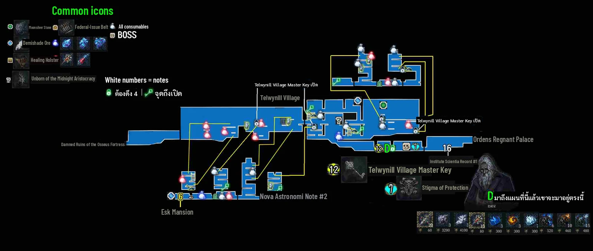
หมู่บ้านหิมะ ต้องทำลายกลอน 5 จุดของประตูใหญ่ก่อนไปบอส
เส้นทางในพื้นที่
- ไปขวาเข้าคฤหาสน์ ดึงคันโยกลดบันได ผ่านไปจนถึงแท่น Regent's Gate และพ่อค้า ข้างแท่นมี Village Master Key
- เปิดประตูแม่กุญแจทีละบาน หาโซ่ใหญ่ 5 จุดแล้วทำลายเพื่อปลดกลอนประตูใหญ่
- กลับไปประตูที่เปิดแล้วข้างแท่น ไปขวาสู้ Starborn Nighthunter ตัวที่สอง
NPC
- พ่อค้าใกล้แท่น Regent's Gate
- บ้านแรกมีทางลับไป Esk Mansion ซึ่งมี Blackhall Family Crest และผีผู้หญิง
เช็กลิสต์ของสะสม
- Starborn Nighthunter #2 — หลังประตูใหญ่. ได้ Stigma of Protection
- Stigma of Protection — ดรอปจาก Nighthunter #2
- Telwynill Village Master Key — ข้างแท่น Regent's Gate
- Unborn #18/20 — Telwynill Village. ดูไอคอนบนแผนที่
ทิปสู้บอส
- Starborn Nighthunter #2 (HP ราว 7,000): ใช้แส้คทากับโล่ วิธีของ NODE คือเดินอ้อมไปตีหลังซ้ำๆ
แหล่งข้อมูล: ShowGamer: Walkthrough · NODE Gamers: Trophy Guide (roadmap + ของสะสม) · GamesFuze: All Stigma Locations · Steam Guide: The Last Faith Bestiary (paladin181) · Steam Guide: 最後的信仰『中文簡易地圖流程』(鬼流) แผนที่ทั้งหมด
14 – Ordens Regnant Palace
13 ชิ้น
Boss×2 Ability×1 Quest×4 Key×1 Weapon×1 Charm×1 Up×1 Spell×1 Unborn×1
- ต้องมีก่อนเข้า
- Propulsion Boots (air dash)
- ทางเชื่อม
- Telwynill Village · ฝั่งซ้าย
- High Walls of Mythringal · ลิฟต์ขวาบนหลังได้ Celestial Larva Celestial Larva (double jump)
- กลับมาทีหลัง
- ประตูที่ล็อกไว้ ทางไปจุดเพลิงที่ 2 และ 3 Ordens Palace Master Key
- ประตูใหญ่ไป Lisa จุดเพลิง 4 จุด (Ordens)
- Sunrise Charm บนที่สูง Celestial Larva (double jump)
- บอส
- Lisa · Mannfred the Accursed
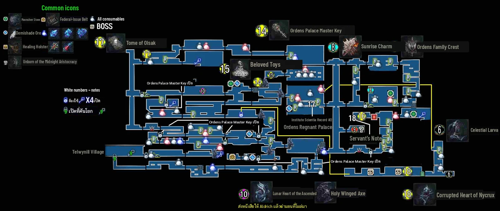
พระราชวังใหญ่ด้านบนของแผนที่ ต้องจุดเพลิง 4 จุดเพื่อเปิดประตูไปบอส แล้วได้กระโดดสองชั้น
เส้นทางในพื้นที่
- ผ่านทางเดินกับดักน้ำแข็ง ทำลายก้อนเนื้อแดงบนพื้นและเพดาน (โดนแล้วเลือดไหล) ปีนเถาวัลย์ขึ้นไปข้างบน
- ใช้ระเบิดเปิดเศษหิน เปิดแท่น Shrine of the Order แล้วไปถึงห้องโถงที่ประตูต้องจุดคบเพลิง 4 อัน
- จุดที่ 1: ตึกที่มีศัตรูเสื้อคลุมขาว ลงไปแล้วออกรูขวา
- หยิบระเบิดไปทำลายเศษหินแล้วเปิดหีบได้ Ordens Palace Master Key
- จุดที่ 2 และ 3 ใช้กุญแจเปิดประตูไป จุดที่ 4 อยู่ขวาของแท่น Sanctuary of the Order หลังดงศัตรู
- เปิดประตูใหญ่ สู้ Lisa ต่อด้วย Mannfred the Accursed แล้วห้องขวามี Celestial Larva
NPC
- Aldrich: หลังให้ Tome of Oisak แล้วไปลานคล้ายสุสานในพระราชวัง จะได้สู้ Frozen Necrogash และได้ Lunar Heart of the Ascended
ความลับ
- Holy Winged Axe: จากแท่นซ้ายล่างดึงคันโยกเรียกลิฟต์ ระหว่างลิฟต์วิ่งจะเห็นหิ้งกับประตูทางขวา กระโดดเข้าไป
- Sunrise Charm: ชั้นแรกของพระราชวัง ต้องกระโดดสองชั้นขึ้นไปหีบซ้ายบนสุด
เช็กลิสต์ของสะสม
- Lisa — หลังประตูคบเพลิง 4 อัน
- Mannfred the Accursed — ต่อจาก Lisa. ได้ Heart of Nycrux
- Celestial Larva — หีบห้องขวาหลัง Mannfred. กระโดดสองชั้น
- Heart of Nycrux (Sepolcro) #3 — หลังชนะ Mannfred
- Ordens Palace Master Key — หีบหลังเศษหินกลางพระราชวัง
- Holy Winged Axe — หิ้งข้างช่องลิฟต์
- Sunrise Charm — หีบสูงฝั่งซ้าย ชั้นแรก. ต้องกระโดดสองชั้น
- Federal-Issue Belt #3 — Ordens Regnant Palace. ตำแหน่งดูไอคอนบนแผนที่
- Tome of Oisak — Ordens Regnant Palace. ให้ Aldrich ก่อนชนะ Cold One Beast
- Beloved Toys ชุดที่ 2 — Ordens Regnant Palace. ให้ Madelyne
- Ordens Family Crest — Ordens Regnant Palace
- Lunar Heart of the Ascended — ชนะ Frozen Necrogash ที่ลานสุสานของพระราชวัง. หลังจบเควสต์ Aldrich
- Unborn #19/20 — Ordens Regnant Palace. ดูไอคอนบนแผนที่
ทิปสู้บอส
- Lisa (HP ราว 8,800): เป็น Starborn Nighthunter ที่แรงขึ้น ใช้วิธีเดิมที่สู้มาสองรอบได้
- Mannfred the Accursed (HP ราว 20,000): ใช้อาวุธใหญ่ตีหัวซึ่งเป็นจุดอ่อน หลังเลือดเหลือครึ่งระวังเงาของเขา
แหล่งข้อมูล: ShowGamer: Walkthrough · NODE Gamers: Trophy Guide (roadmap + ของสะสม) · GamesFuze: All Primary Weapon Locations · CommonSenseGamer: Weapons List · GamerHour: Sunrise Charm · CommonSenseGamer: All Spells · Steam Guide: The Last Faith Bestiary (paladin181) · Steam Guide: 最後的信仰『中文簡易地圖流程』(鬼流) แผนที่ทั้งหมด
15 – High Walls of Mythringal
8 ชิ้น
Boss×2 Quest×1 Key×1 Stigma×1 Charm×1 Up×1 Unborn×1
- ต้องมีก่อนเข้า
- Celestial Larva (double jump)
- ทางเชื่อม
- City of Mythringal · ลิฟต์จากสุสานซ้ายของ Wymond ไป Caterina's Church Gravitational Ring
- Ordens Regnant Palace · ลิฟต์จากพระราชวัง
- Junas Ministry · ไปขวาและลงล่างสุดผ่านบอส Leena
- กลับมาทีหลัง
- Jailor's Key บนเพดาน Caterina's Church Nighthunter's Grappling Claw
- Stigma of Catalysis ล่างสุดของพื้นที่ Celestial Larva (double jump)
- บอส
- Cold One Beast · Leena
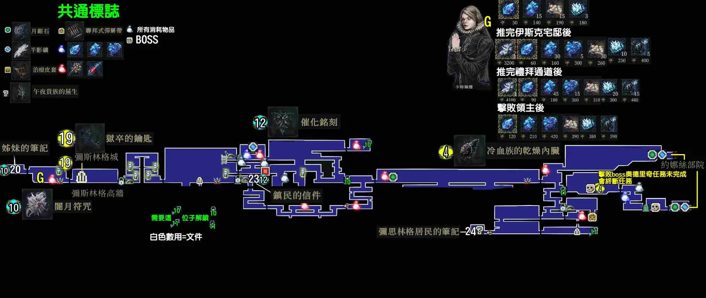
กำแพงเมืองสูง แท่น Caterina's Church เปิดได้ตั้งแต่ช่วงกลางเกม แต่ส่วนที่เหลือมาหลังได้กระโดดสองชั้น
เส้นทางในพื้นที่
- คุยกับ Caterina ที่ Caterina's Church (ขาย Focus crystal)
- สำรวจพื้นที่แล้วสู้ Cold One Beast (ส่งหนังสือให้ Aldrich ก่อน ไม่งั้นเควสต์เขาพัง)
- ไปขวาลงล่างสุดสู้ Leena แล้วผ่านไป Junas Ministry
NPC
- Caterina: ขาย Focus crystal
ความลับ
- Stigma of Catalysis: ล่างสุดของ High Walls ผ่านรูปปั้นพ่นไฟกับ Giant Patron ที่เดินวน ปีนบันไดท้ายทางแล้วจะเห็นวางอยู่บนพื้น
เช็กลิสต์ของสะสม
- Cold One Beast — High Walls of Mythringal. ได้ liver
- Leena — ทางลงไป Junas
- Dried Cold One Liver #3 — ดรอปจาก Cold One Beast
- Jailor's Key — เพดานจุดเซฟ Caterina's Church. ใช้ตะขอ
- Stigma of Catalysis — ล่างสุดของพื้นที่. ต้องกระโดดสองชั้น
- Dark Moon Charm — High Walls of Mythringal. ดาเมจและป้องกันมืด +15%
- Federal-Issue Belt #4 — High Walls of Mythringal. ตำแหน่งดูไอคอนบนแผนที่
- Unborn #20/20 — High Walls of Mythringal. ดูไอคอนบนแผนที่
ทิปสู้บอส
- Cold One Beast (HP ราว 37,000): ตีแรงแต่ส่งสัญญาณชัด เน้นหลบมากกว่าแลก
- Leena (HP ราว 17,000): คล้ายตอนสู้ใน Esk แต่ที่ 50% มีเฟสสอง ใช้เวทมืดเพิ่มจากไฟ
แหล่งข้อมูล: NODE Gamers: Trophy Guide (roadmap + ของสะสม) · ShowGamer: Walkthrough · GamesFuze: All Stigma Locations · ProdigyGamers: All Charm Locations · Steam Guide: The Last Faith Bestiary (paladin181) · Steam Guide: 最後的信仰『中文簡易地圖流程』(鬼流) แผนที่ทั้งหมด
16 – Junas Ministry
5 ชิ้น
Boss×1 Gun×1 Up×2 Quest×1
- ต้องมีก่อนเข้า
- Celestial Larva (double jump)
- ทางเชื่อม
- High Walls of Mythringal · ฝั่งซ้าย
- Wonder of Illygarth · หลังชนะ Laddak กลับไปรูปปั้นใน Oxnevylle Manor ชนะ Lord Patryk Laddak
- กลับมาทีหลัง
- ประตูไปบอส: ชนะบิชอป 4 ตัวให้ไฟบนแท่นรูปเพชรติดครบ
- บอส
- Lord Patryk Laddak
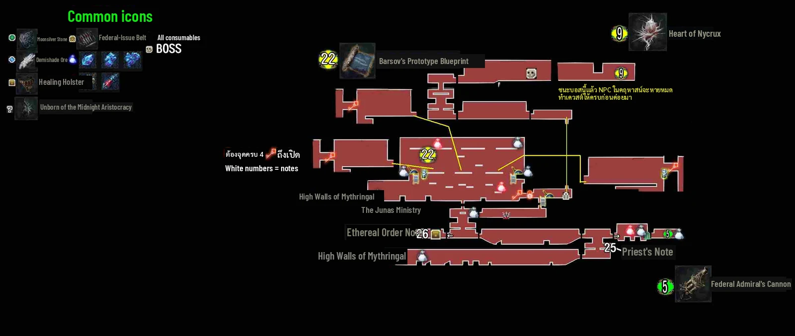
พื้นที่สุดท้ายที่มีเลือดท่วม สำรวจได้เต็มที่ แต่ชนะ Lord Patryk Laddak เมื่อไหร่ก็ย้อนกลับไม่ได้
เส้นทางในพื้นที่
- ผ่านเขตเลือดท่วม ใช้กระโดดสองชั้นขึ้นไปเปิดแท่น Altar of the Verb of Junas เซฟไว้ตรงนี้แล้วหยุดก่อน
- ล่าบิชอป 4 ตัว (ใกล้แท่น 1 ตัว และในศาลาข้างนอกอีก 3 จุด) ไฟบนแท่นจะติดครบ 4 ดวง
- ประตูขวาเปิด ดึงคันโยกลดบันได ขึ้นลิฟต์ คุยกับ Lisa แล้วสู้ Lord Patryk Laddak
NPC
- Lisa: เจอก่อนบอสสุดท้าย
ความลับ
- Healing Holster: ในตึกหลังเขตเลือดท่วมที่สอง ตีกำแพงซ้าย
เช็กลิสต์ของสะสม
- Lord Patryk Laddak — ยอด Junas Ministry. จุดย้อนกลับไม่ได้
- Federal Admiral's Cannon — Junas Ministry. ตำแหน่งดูไอคอนบนแผนที่
- Healing Holster #4 — กำแพงลับซ้ายในตึก
- Barsov's Prototype Blueprint — โบสถ์ใหญ่ใน Junas. ให้ Mariano แล้วตีบวกได้ถึง +10
- Heart of Nycrux (Sepolcro) #4 — หลังชนะ Laddak
ทิปสู้บอส
- Lord Patryk Laddak (เฟสแรกราว 17,000 เฟสสองราว 32,000): ที่ 50% เรียก Winged Pale Lament 2 ตัว (ตัวละราว 2,400) ฆ่าแล้วอาจดรอป Healing Injection ก่อนสู้ให้ทำทุกอย่างในหน้า "ของที่พลาดได้" ให้เสร็จ
แหล่งข้อมูล: ShowGamer: Walkthrough · NODE Gamers: Trophy Guide (roadmap + ของสะสม) · Steam Guide: [Video] 100% Walkthrough · Steam Guide: The Last Faith Bestiary (paladin181) · Steam Guide: 最後的信仰『中文簡易地圖流程』(鬼流) แผนที่ทั้งหมด
17 – Wonder of Illygarth
2 ชิ้น
Boss×2
- ต้องมีก่อนเข้า
- ชนะ Lord Patryk Laddak
- ทางเชื่อม
- Oxnevylle Manor · รูปปั้นในคฤหาสน์
- กลับมาทีหลัง
- บอสจริงตัวสุดท้าย (ฉากจบแท้) Technological LensSecond Skin
- บอส
- Annabella & Caterina · Medeya, the Cosmic Voice
พื้นที่ฉากจบ ไปได้จากรูปปั้นใน Oxnevylle Manor หลังชนะ Laddak เงื่อนไขฉากจบอยู่ในหน้า "ฉากจบ" ซึ่งพับซ่อนสปอยล์ไว้
เส้นทางในพื้นที่
- ShowGamer บอกให้เดินกลับคฤหาสน์เอง เพราะแท่นบางจุด เช่น West District ของ Mythringal จะใช้ไม่ได้
เช็กลิสต์ของสะสม
- Annabella & Caterina — Wonder of Illygarth. สู้เมื่อปฏิเสธบัลลังก์
- Medeya, the Cosmic Voice — Wonder of Illygarth. ต้องมีดวงตา Esk ทั้งสองข้าง
ทิปสู้บอส
- Annabella & Caterina (ราว 16,000 และ 24,500): หลบท่าแล้วตีตอนทั้งคู่ยืนนิ่งก่อนโจมตีรอบใหม่ เฟสสองจะโจมตีพร้อมกัน
- Medeya (HP ราว 40,000): ราว 80% เรียกศัตรูกลุ่มหนึ่ง ราว 50% เรียกร่างแยกลวงตา
แหล่งข้อมูล: NODE Gamers: Trophy Guide (roadmap + ของสะสม) · ShowGamer: Walkthrough · Steam Guide: The Last Faith Bestiary (paladin181) · Steam Guide: 最後的信仰『中文簡易地圖流程』(鬼流) แผนที่ทั้งหมด
DLC Awakened Ancients – โหมดใหม่
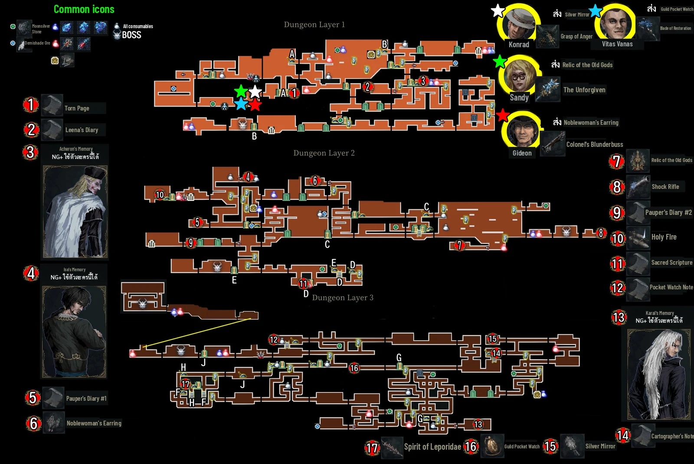
DLC ฟรี ออกเมื่อ 20 ม.ค. 2026 ต้องมีเกมหลัก
- Dungeon Mode: ได้ Grappling Claw แล้วขึ้นชั้น 2 ของ Oxnevylle Manor เข้าประตูซ้ายไปห้องแท่นบูชาใหม่ ในโหมดนี้เล่นเป็นตัวละครใหม่ 3 ตัว (เล่น Eryk ไม่ได้) จบแล้วได้สกิน
- New Game+: หลังจบเกม เลือกเริ่มรอบใหม่ที่ยากขึ้น เซฟเดิมจะถูกแทนที่และเควสต์ NPC รีเซ็ตทั้งหมด ไปต่อ NG+2 NG+3 ได้
- Boss Rush และ Tower of Despair: เปิดในเมนู Extra หลังจบเกมและเริ่ม NG+
- ของใหม่: อาวุธ 7 ชิ้น (ประชิด 4 ระยะไกล 3) ไอเทม 3 ชิ้น ศัตรู 7 ตัว บอส 5 ตัว NPC 4 คน และโน้ตเพิ่ม 7 ชิ้น
หนูยังไม่ได้ทำเช็กลิสต์ของใน DLC เพราะยังไม่เจอแหล่งที่ระบุตำแหน่งครบค่ะ
ที่มา: Steam: Awakened Ancients DLC FAQ, Steam Store: Awakened Ancients, Steam Guide: 最後的信仰『中文簡易地圖流程』(鬼流) แผนที่ทั้งหมด
บอสทั้งหมด
HP เป็นค่าโดยประมาณจาก Bestiary ของ paladin181 (เวอร์ชัน 2.2.0) เกมแพตช์ใหม่อาจต่างไปบ้าง วิธีสู้อยู่ในหน้าพื้นที่ของบอสแต่ละตัวค่ะ
| บอส | พื้นที่ | HP ราว | ประเภท |
|---|---|---|---|
| Giant Patron | Temple of the Deposed Gods | 2,200 | บังคับ |
| Winged Pale Lament ×2 | Federal Inquisition | 1,630 ต่อตัว | บังคับ |
| Dr. Ridley Hermann | Federal Inquisition | 3,000 + 2,400 | บังคับ |
| Old Wymond | City of Mythringal | 35,000 | ลับ |
| Edwyn the Shadowscourge Horror | Drowned Crypt | 9,000 | บังคับ |
| Nyxaroth, the Eldritch Wight | Drowned Crypt | 48,000 | ลับ |
| Starborn Nighthunter | City of Erlim | 3,450 | บังคับ |
| Yegor & Leena | Esk Mansion | 6,000 + 8,000 | บังคับ |
| Harbinger of Nightmare | Esk Mansion | 75,000 (ลดจริงราว 38,000) | ลับ |
| The Burnt Apostate | Liturgical Pass | 6,800 + 9,250 | บังคับ |
| Voracious Terror | Damned Ruins of the Osseus Fortress | 6,150 | บังคับ |
| Starlight Beast of Illygarth | Damned Ruins of the Osseus Fortress | 17,500 | ลับ |
| Starborn Nighthunter #2 | Telwynill Village | 7,000 | บังคับ |
| Lisa | Ordens Regnant Palace | 8,800 | บังคับ |
| Mannfred the Accursed | Ordens Regnant Palace | 20,000 | บังคับ |
| Frozen Necrogash | Ordens Regnant Palace | 1,300 | เควสต์ Aldrich |
| Cold One Beast | High Walls of Mythringal | 37,000 | บังคับ |
| Leena | High Walls of Mythringal | 17,000 | บังคับ |
| Lord Patryk Laddak | Junas Ministry | 17,000 + 32,000 | บังคับ (ย้อนกลับไม่ได้) |
| Annabella & Caterina | Wonder of Illygarth | 16,000 + 24,500 | ฉากจบ |
| Medeya, the Cosmic Voice | Wonder of Illygarth | 40,000 | ฉากจบแท้ |
ที่มา: Steam Guide: The Last Faith Bestiary (paladin181), NODE Gamers: Trophy Guide (roadmap + ของสะสม), Gamer Journalist: All Bosses
ของที่พลาดได้ – ทำก่อนชนะ Laddak
ชนะ Lord Patryk Laddak แล้วกลับมาทำสิ่งเหล่านี้ไม่ได้ (ยกเว้น Blueprint ที่ยังส่ง Mariano ได้) แผนที่จีนเตือนด้วยว่า NPC ในคฤหาสน์จะหายหลังบอสสุดท้าย
- Aldrich: ส่ง Tome of Oisak ก่อนชนะ Cold One Beast ไม่งั้นเขาหายไปเลย
- Madelyne และ Theodora: ของเล่น 3 ชุด (Theodora ให้ 1 ชุด, Ordens Regnant Palace, Liturgical Pass)
- Lady Annika: คุยใน Mythringal, ที่คฤหาสน์ แล้วไปหา Veiled Maiden ใน Erlim และกลับมาคุยอีกที
- Helenya: คืน Blessed Teacup
- Lady Dorothea: ส่ง Dried Cold One Liver ครบ 4 ชิ้น (NODE บอกว่าเควสต์นี้บั๊กได้ ส่ง 3 ชิ้นแรกก่อนไปสู้บอสชิ้นที่ 4)
- Second Skin: ซื้อจาก Veiled Maiden (10,000) ก่อนชนะ Laddak ถ้าอยากได้ฉากจบแท้
- Lucyl: ส่ง Water Well Flowers (ไม่ได้ระบุว่าพลาดได้ แต่ทำให้จบก่อนดีกว่า)
NODE แนะนำให้ใช้การเซฟที่แท่นช่วย ถ้าเควสต์บั๊กให้ออกเกมก่อนพักแท่นแล้วโหลดใหม่
ที่มา: NODE Gamers: Trophy Guide (roadmap + ของสะสม), ShowGamer: Walkthrough, Steam Guide: 最後的信仰『中文簡易地圖流程』(鬼流) แผนที่ทั้งหมด
ฉากจบ (สปอยล์) – กดเพื่อเปิด
มี 3 ฉากจบ เลือกตอนเจอบัลลังก์ใน Wonder of Illygarth เซฟก่อนเลือกเพื่อโหลดกลับมาดูอีกแบบได้
- Hail to the King: เลือกรับบัลลังก์ ไม่มีเงื่อนไขอื่น
- Embrace the Cosmic Voice: ปฏิเสธบัลลังก์แล้วชนะ Annabella & Caterina
- True ending (All Will Be Revealed): มี Esk's Left Eye และ Esk's Right Eye ปฏิเสธบัลลังก์ ชนะ Annabella & Caterina แล้วสู้ Medeya, the Cosmic Voice
วิธีได้ดวงตา Esk
- มี Technological Lens
- ทำเควสต์ Lady Annika ให้จบ แล้วซื้อ Second Skin จาก Veiled Maiden ใน Erlim ก่อนชนะ Laddak
- ไปหาผีผู้หญิงใน Esk Mansion ผ่านทางลับใน Telwynill
- ตามหัวกะโหลกลอยใน Esk Mansion (สู้ Harbinger of Nightmare ได้ Left Eye) และใน Osseus ฝั่ง Moonshadow Lake (Right Eye)
คอมเมนต์ผู้เล่นคนหนึ่งในหน้า NODE บอกว่าถ้ามีดวงตาครบสองข้างแล้วจะได้ฉากจบ Embrace ไม่ได้ ยังไม่มีแหล่งอื่นยืนยัน ถ้าอยากได้ครบทุกฉากให้ลองดู Embrace ก่อนเก็บดวงตาข้างที่สองค่ะ
ที่มา: NODE Gamers: Trophy Guide (roadmap + ของสะสม), ShowGamer: Walkthrough
แหล่งข้อมูลและข้อควรระวัง
- NODE Gamers: Trophy Guide (roadmap + ของสะสม)
- ShowGamer: Walkthrough
- Steam Guide: [Video] 100% Walkthrough
- Steam Guide: The Last Faith Bestiary (paladin181)
- Steam Guide: 最後的信仰『中文簡易地圖流程』(鬼流) แผนที่ทั้งหมด
- GamesFuze: All Primary Weapon Locations
- CommonSenseGamer: Weapons List
- CommonSenseGamer: All Spells
- ProdigyGamers: All Charm Locations
- GamerHour: Dark Comet Charm
- GamerHour: Sunrise Charm
- GamesFuze: All Stigma Locations
- ScreenRant: Leena's Bow
- Attack of the Fanboy: 4 Combat Styles
- Destructoid: Which stats to upgrade first
- CommonSenseGamer: Attributes Guide
- Pro Game Guides: Healing Injections
- Game Rant: How to Level Up
- Steam: Awakened Ancients DLC FAQ
- Steam Store: Awakened Ancients
- Steam Discussion: normal order of areas
- Gamer Journalist: All Bosses
- Reddit: Best starting class?
จุดที่ยังไม่แน่ใจ
- Firestriker Blade: CommonSenseGamer บอกว่าขึ้นร้าน Mariano หลังให้ Rare Prototype Blueprint แต่ GamesFuze บอกว่าหลังชนะ Manfredd
- Woman in Ink อยู่ Broken Pass หรือ Oxnevylle Manor แหล่งข้อมูลไม่ตรงกัน
- ทางไป Telwynill ล็อกด้วยแท่นเลือด 4 จุดจริงหรือไม่
- ส่วนบนของ Broken Pass เชื่อมกับ Liturgical Pass ตรงไหน
- จุดอ่อนไฟฟ้าของ Hermann มาจากคอมเมนต์ผู้เล่นเท่านั้น และยังไม่เจอทิปสู้ Edwyn
- ของหลายชิ้นรู้แค่ระดับพื้นที่ (Unborn, Belt, Holster ใน Erlim, Blackhall's Double Menace) ให้ดูไอคอนบนแผนที่ประกอบ
- Fextralife wiki เปิดไม่ได้ตอนทำคู่มือ จึงใช้แหล่งอื่นแทนทั้งหมด
ทำโดยออย 🎮 · ต.ค. 2026